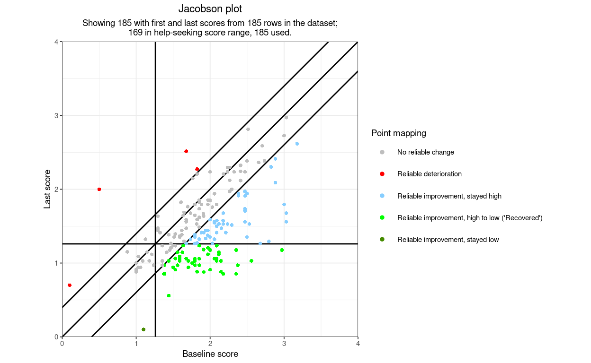
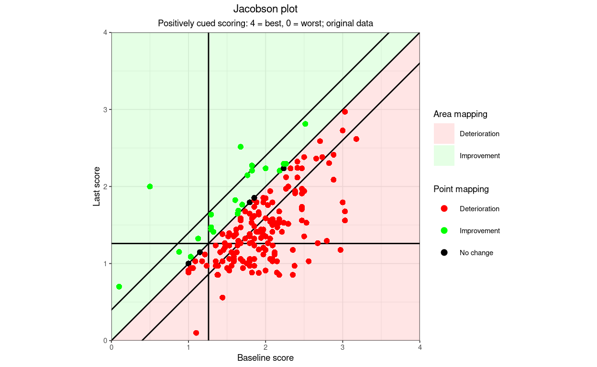

[This started as an Rblog post on 1.xi.23. It is work in progress and will evolve a lot over the next weeks. When its ready it will be added to the CECPfuns R package on github. Latest updates 13.xi.23]
Show code
### this is just getting the data and then adding a few artificial points
if (interactive()) {
load(file = "./_posts/2023-11-01-plotjacobson/tmpTib") # running interactively
} else {
load(file = "tmpTib") # in the full Rblog
}
tibDat <- tmpTib
tmpTibDat <- tibble(id = c(997, 998, 999),
firstScore = c(.5, .1, 1.1),
lastScore = c(2, .7, .1))
bind_rows(tmpTibDat,
tibDat) -> tibDat
rm(tmpTib)
rm(tmpTibDat)
RCI <- getRCIfromSDandAlpha(sd(tibDat$firstScore), rel = 0.943242)
CSC <- 1.26
# minPossScore <- NA
# maxPossScore <- NA
# baselineScores <- tibDat$firstScore
# finalScores <- tibDat$lastScore
# pointNames <- tibDat$id
# goodScorePos <- FALSE
#
# tibble(baselineScores = baselineScores,
# finalScores = finalScores,
# pointNames = pointNames) -> tmpTib
### now we can define the function
getJacobsonPlot <- function(baselineScores,
finalScores,
pointNames = NA, # can be used to label points
namesNotPoints = FALSE, # only use labels, no points
nameRCIDetOnly = FALSE, # only label deteriorators
namesSize = 2, # sets the font size for labels
CSC = NA, # the CSC value to use
RCI = NA, # the RCI value to use
minPossScore = 0,
maxPossScore = 4,
goodScorePos = FALSE, # set to TRUE/T if a better score is positive
omitNHS = FALSE, # use to omit scores starting in non-help-seeking range
title = NULL, # to override the default title
subtitle = NULL, # ditto for subtitle
titleJustificn = .5, # centre justifies titles, 0 for L, 1 for R
xLab = NULL, # overrides the default x axis label
yLab = NULL, # overrides the default y axis label
noLegend = FALSE, # removes legends for colours
labelCSClines = FALSE, # set to TRUE/T to label CSC lines with CSC value
areaColourScheme = c("NONE", # mapping to use, see notes, schemes are:
"RCSC5",
"DIRECTION",
"RCI3",
"CSC4",
"RCSC7",
"RCSC10",
"POLYGONS"),
legendNameAreas = "Area mapping", # set title for area legend
pointColourScheme = c("RCSC5",
"RCI3",
"DIRECTION",
"CSC4",
"RCSC7",
"RCSC10",
"NONE"), # chose point colour mapping, as above
legendNamePoints = "Point mapping", # title for point colours
### now lots of mappings used by the above colour mappings
coloursDirection = c("red",
"green",
"black"),
### you can override the labels to local choice and language
labelsDirection = c("Deterioration",
"Improvement",
"No change"),
coloursRCI3 = c("grey",
"red",
"green"),
labelsRCI3 = c("No reliable change",
"Reliable deterioration",
"Reliable improvement"),
coloursCSC4 = c("green",
"red",
"orange",
"skyblue1"),
labelsCSC4 = c("High to low",
"Low to high",
"Stayed high",
"Stayed low"),
coloursRCSC5 = c("grey",
"red",
"skyblue1",
"green",
"chartreuse4"),
labelsRCSC5 = c("No reliable change",
"Reliable deterioration",
"Reliable improvement, stayed high",
"Reliable improvement, high to low ('Recovered')",
"Reliable improvement, stayed low"),
### it's essentially impossible to code labels for the RCSC
### that would be independent of the cueing of the scores
### hence different labels (but same colours and order)
### for positively cued measures
labelsRCSC5pos = c("No reliable change",
"Reliable deterioration",
"Reliable improvement, stayed high",
"Reliable improvement, low to high ('Recovered')",
"Reliable improvement, stayed low"),
coloursRCSC7 = c("grey",
"orange",
"red",
"sienna2",
"palegreen",
"green",
"skyblue1"),
labelsRCSC7 = c("No reliable change",
"Reliable deterioration, stayed high",
"Reliable deterioration, low to high",
"Reliable deterioration, stayed low",
"Reliable improvement, stayed high",
"Reliable improvement, high to low ('Recovered')",
"Reliable improvement, stayed low"),
labelsRCSC7pos = c("No reliable change",
"Reliable deterioration, stayed low",
"Reliable deterioration, high to low",
"Reliable deterioration, stayed high",
"Reliable improvement, stayed low",
"Reliable improvement, low to high ('Recovered')",
"Reliable improvement, stayed high"),
coloursRCSC10 = c("yellow", #1
"blue", #2
"purple", #3
"grey", #4
"orange", #5
"red", #6
"violetred4", #7
"palegreen", #8
"green", #9
"chartreuse4"), #10
labelsRCSC10 = c("No reliable change, stayed high", #1
"No reliable change, high to low", #2
"No reliable change, low to high", #3
"No reliable change, stayed low", #4
"Reliable deterioration, stayed high", #5
"Reliable deterioration, low to high", #6
"Reliable deterioration, stayed low", #7
"Reliable improvement, stayed high", #8
"Reliable improvement, high to low ('Recovered')", #9
"Reliable improvement, stayed low"), #10
labelsRCSC10pos = c("No reliable change, stayed low", #1p
"No reliable change, low to high", #2p
"No reliable change, high to low", #3p
"No reliable change, stayed high", #4p
"Reliable deterioration, stayed low", #5p
"Reliable deterioration, low to high", #6p
"Reliable deterioration, stayed high", #7p
"Reliable improvement, stayed low", #8p
"Reliable improvement, low to high ('Recovered')", #9p
"Reliable improvement, stayed high"), #10p
### you can also add mapping to point shapes
pointShapeScheme = c("NONE",
"DIRECTION",
"RCI3"),
### these allow you to override the default mapping to
### a square and arrows pointing the appropriate ways
### NULL leaves the default mapping in place
### I really don't advise overriding these but you can!
pointShapeNoRelChange = NULL,
pointShapeRelDet = NULL,
pointShapeRelImp = NULL,
### the following arguments control the aesthetics
pointSize = 1,
### the default alpha settings allow both points and areas to be coloured
pointAlpha = 1, # 1 is no transparency, 0 is no colour
areaAlpha = .3, # ditto, .3 is probably OK for a pale coloured ground
### aesthetics for the no-change diagonal line
lineTypeNoChange = 1, # default is solid line
lineWidthNoChange = .5, # default is ggplot default line thickness
lineColourNoChange = 1, # default is black
### same for the CSC lines
lineTypeCSC = 1,
lineWidthCSC = .5,
lineColourCSC = 1,
### same for the RCI lines
lineTypeRCI = 1,
lineWidthRCI = .5,
lineColourRCI = 1,
themeToUse = theme_bw(), # set ggplot theme to use, unquoted
### I can't imagine changing these myself but ...
### these allow you to override the theme's colours
plotColour = NULL, # background colour of the plot area itself, e.g. "white"
borderColour = NULL, # and same for the border around it
### you might want to use these to suppress messages and warnings
noMessages = FALSE, # suppress messages
noWarnings = FALSE, # suppress my warnings (not other R ones)
### these are probably only useful to help me debug things
printVariables = FALSE, # will give a print out of all internal variables
warningsToErrors = FALSE, # makes warnings into errors, i.e.
### this is really only for someone drilling into the code
### it labels all twelve area polygons with their numbers
labelAllPolygons = FALSE,
### arguments not implemented yet
greyScale = FALSE # may be implemented to force B&W/greyscale
){
###
### function to give single group Jacobson plot given vectors of pre and post scores
### and fixed CSC and RCI
### default, with goodScorePos == FALSE, is distress/dysfunction scoring i.e. higher scores worse
### but can override that by using goodScorePos == TRUE
### by default the function expects to be told minimum and maximum scores on the measure
### these are simple numerical min and max, i.e. ignores whether scale is positive or negative
### those default to zero and four as per original CORE scoring but can be overridden (doh!)
### fixing either or both minPossScore and maxPossScore to NULL means the observed minimum
### and maximum will be used, not recommended and may produce odd scale labelling
###
### get the arguments before anything is changed
listArgs <- as.list(match.call(expand.dots = FALSE)[-1])
### handle warningsToErrors before other arguments
### test it
if (!is.logical(warningsToErrors)){
stop("You have given warningsToErrors as something other than a logical value (TRUE, FALSE, T or F). Sorry: please go back and fix this.")
}
if (length(warningsToErrors) != 1) {
stop("The argument warningsToErrors must be a single logical value. Sorry: please go back and fix this.")
}
oldWarn <- getOption("warn")
if (warningsToErrors) {
options("warn" = 2)
}
### handle noMessages before other arguments
### test it
if (!is.logical(noMessages)){
stop("You have given noMessages as something other than a logical value (TRUE, FALSE, T or F). Sorry: please go back and fix this.")
}
if (length(noMessages) != 1) {
stop("The argument noMessages must be a single logical value. Sorry: please go back and fix this.")
}
### handle noWarnings before other arguments
### test it
if (!is.logical(noWarnings)){
stop("You have given noWarnings as something other than a logical value (TRUE, FALSE, T or F). Sorry: please go back and fix this.")
}
if (length(noWarnings) != 1) {
stop("The argument noWarnings must be a single logical value. Sorry: please go back and fix this.")
}
### now match the arguments which are switch choices, these will have the default match.arg error trapping
###
areaColourScheme <- str_to_upper(match.arg(areaColourScheme))
pointColourScheme <- str_to_upper(match.arg(pointColourScheme))
pointShapeScheme <- match.arg(pointShapeScheme) ### all three options start differently so can do this:
pointShapeScheme <- str_to_upper(pointShapeScheme)
###
### sanity testing of other arguments
###
if (length(baselineScores) != length(finalScores)) {
stop("Length of baseline and final scores must be the same")
}
if (!is.numeric(baselineScores)) {
stop("Baseline scores must be numeric")
}
if (!is.numeric(finalScores)) {
stop("Final scores must be numeric")
}
if (!is.na(pointNames[1]) & (length(pointNames) != length(baselineScores))) {
stop("When given, the length of labels (pointNames) must be same as lengths of scores")
}
if (!is.na(pointNames[1]) & is.numeric(pointNames)) {
if (!noWarnings) {
warning("You have given a numeric vector for pointNames. If you have many numbers this will be a mess!")
}
pointNames <- as.character(pointNames)
}
if (!is.na(pointNames[1]) & !(any(is.character(pointNames),
is.factor(pointNames),
is.numeric(pointNames)))) {
stop("You have given pointNames as something other than numeric (discouraged), character or factor. Sorry: please go back and fix this.")
}
if (!is.logical(namesNotPoints)){
stop("You have given namesNotPoints as something other than a logical value (TRUE, FALSE, T or F). Sorry: please go back and fix this.")
}
if (length(namesNotPoints) != 1) {
stop("The argument namesNotPoints must be a single logical value. Sorry: please go back and fix this.")
}
if (!is.logical(nameRCIDetOnly)){
stop("You have given nameRCIDetOnly as something other than a logical value (TRUE, FALSE, T or F). Sorry: please go back and fix this.")
}
if (length(nameRCIDetOnly) != 1) {
stop("The argument nameRCIDetOnly must be a single logical value. Sorry: please go back and fix this.")
}
if (!is.numeric(namesSize)) {
stop("The value for namesSize must be numeric. Sorry: please go back and fix this.")
}
if (length(namesSize) != 1) {
stop("The argument namesSize must be a single number. Sorry: please go back and fix this.")
}
if (namesSize < 0) {
stop("The value for namesSize must be a positive number. Sorry: please go back and fix this.")
}
if (!is.na(CSC) & !is.numeric(CSC)){
stop("You have given CSC as something other than a numeric value. Sorry: please go back and fix this.")
}
if (length(CSC) != 1) {
stop("The argument CSC must be a single numeric value. Sorry: please go back and fix this.")
}
if (!is.na(RCI) & !is.numeric(RCI)){
stop("You have given RCI as something other than a numeric value. Sorry: please go back and fix this.")
}
if (length(RCI) != 1) {
stop("The argument RCI must be a single numeric value. Sorry: please go back and fix this.")
}
if (is.na(minPossScore)){
stop("You have not given a value for minPossScore (NA is the default). Sorry, but I set that default to force users to choose the appropriate value. It must be the lowest numeric value possible for the score, not the worst score (which would be the lowest number possible for a positively cued measure). Sorry: please go back and fix this.")
}
if (is.na(minPossScore) & !is.numeric(minPossScore)){
stop("You have given minPossScore as something other than a numeric value. Sorry: please go back and fix this.")
}
if (length(minPossScore) != 1) {
stop("The argument minPossScore must be a single numeric value. Sorry: please go back and fix this.")
}
if (is.na(maxPossScore)){
stop("You have not given a value for maxPossScore (NA is the default). Sorry, but I set that default to force users to choose the appropriate value. It must be the highest numeric value possible for the score, not the best score (which would be the lowest number possible for a positively cued measure). Sorry: please go back and fix this.")
}
if (!is.na(maxPossScore) & !is.numeric(maxPossScore)){
stop("You have given maxPossScore as something other than a numeric value. Sorry: please go back and fix this.")
}
if (length(maxPossScore) != 1) {
stop("The argument maxPossScore must be a single numeric value. Sorry: please go back and fix this.")
}
if (maxPossScore < minPossScore) {
msg <- paste0("You have given minPossScore as ",
minPossScore,
" and maxPossScore as ",
maxPossScore,
"\nbut these must be in order of actual scores not cueing of scores.",
"\ni.e. maxPossScore must be higher than minPossScore whether higher scores are better or worse than lower scores. Sorry: please go back and fix this.")
stop(msg)
}
if (!is.na(CSC) & (CSC < minPossScore |
CSC > maxPossScore)) {
msg <- paste0("You have given CSC as ",
CSC,
" and minPossScore as ",
minPossScore,
" and maxPossScore as ",
maxPossScore,
"\nbut CSC must lie between the possible scores. Sorry: please go back and fix this.")
stop(msg)
}
if (!is.logical(goodScorePos)){
stop("You have given goodScorePos as something other than a logical value (TRUE, FALSE, T or F). Sorry: please go back and fix this.")
}
if (length(goodScorePos) != 1) {
stop("The argument goodScorePos must be a single logical value. Sorry: please go back and fix this.")
}
if (!is.logical(omitNHS)){
stop("You have given omitNHS as something other than a logical value (TRUE, FALSE, T or F). Sorry: please go back and fix this.")
}
if (length(omitNHS) != 1) {
stop("The argument omitNHS must be a single logical value. Sorry: please go back and fix this.")
}
if (!is.null(title) & !is.character(title)) {
stop("If you are giving a title it must be a single character value. Sorry: please go back and fix this.")
}
if (!is.null(title) & length(title) != 1) {
stop("If you are giving a title it must be a single value. Sorry: please go back and fix this.")
}
if (!is.null(subtitle) & !is.character(subtitle)) {
stop("If you are giving a subtitle it must be a single character value. Sorry: please go back and fix this.")
}
if (!is.null(subtitle) & length(subtitle) != 1) {
stop("If you are giving a subtitle it must be a single value. Sorry: please go back and fix this.")
}
if (!is.numeric(titleJustificn)) {
stop("The argument titleJustificn must be a single number. Sorry: please go back and fix this.")
}
if (length(titleJustificn) != 1) {
stop("The argument titleJustificn must be a single number. Sorry: please go back and fix this.")
}
if (!(titleJustificn %in% c(0, .5, 1))) {
msg <- paste0("You gave titleJustificn as ",
titleJustificn,
"but it must be one of: 0 (left justified), .5 (centred) or 1 (right justified). Sorry: please go back and fix this.")
stop(msg)
}
if (!is.null(xLab) & !is.character(xLab)) {
stop("If you are giving a label for the x axis it must be a single character value. Sorry: please go back and fix this.")
}
if (!is.null(xLab) & length(xLab) != 1) {
stop("If you are giving a label for the x axis it must be a single value. Sorry: please go back and fix this.")
}
if (!is.null(yLab) & !is.character(yLab)) {
stop("If you are giving a label for the y axis it must be a single character value. Sorry: please go back and fix this.")
}
if (!is.null(yLab) & length(yLab) != 1) {
stop("If you are giving a label for the y axis it must be a single value. Sorry: please go back and fix this.")
}
if (!is.logical(noLegend)){
stop("You have given noLegend as something other than a logical value (TRUE, FALSE, T or F). Sorry: please go back and fix this.")
}
if (length(noLegend) != 1) {
stop("The argument noLegend must be a single logical value. Sorry: please go back and fix this.")
}
if (!is.logical(labelCSClines)){
stop("You have given labelCSClines as something other than a logical value (TRUE, FALSE, T or F). Sorry: please go back and fix this.")
}
if (length(labelCSClines) != 1) {
stop("The argument labelCSClines must be a single logical value. Sorry: please go back and fix this.")
}
if (!is.null(legendNameAreas) & !is.character(legendNameAreas)) {
stop("If you are giving a new label to the area legend it must be a single character value. Sorry: please go back and fix this.")
}
if (!is.null(legendNameAreas) & length(legendNameAreas) != 1) {
stop("If you are giving a new label to the area legend it must be a single value. Sorry: please go back and fix this.")
}
if (!is.null(legendNamePoints) & !is.character(legendNamePoints)) {
stop("If you are giving a new label to the point legend it must be a single character value. Sorry: please go back and fix this.")
}
if (!is.null(legendNamePoints) & length(legendNamePoints) != 1) {
stop("If you are giving a new label to the point it must be a single value. Sorry: please go back and fix this.")
}
if (!is.character(coloursDirection)) {
stop("The argument coloursDirection must be a character vector of length three. Sorry: please go back and fix this.")
}
if (length(coloursDirection) != 3) {
stop("The argument coloursDirection must be a character vector of length three. Sorry: please go back and fix this.")
}
if (!is.character(labelsDirection)) {
stop("The argument labelsDirection must be a character vector of length three. Sorry: please go back and fix this.")
}
if (length(labelsDirection) != 3) {
stop("The argument labelsDirection must be a character vector of length three. Sorry: please go back and fix this.")
}
if (!is.character(coloursRCI3)) {
stop("The argument coloursRCI3 must be a character vector of length three. Sorry: please go back and fix this.")
}
if (length(coloursRCI3) != 3) {
stop("The argument coloursRCI3 must be a character vector of length three. Sorry: please go back and fix this.")
}
if (!is.character(labelsRCI3)) {
stop("The argument labelsRCI3 must be a character vector of length three. Sorry: please go back and fix this.")
}
if (length(labelsRCI3) != 3) {
stop("The argument labelsRCI3 must be a character vector of length three. Sorry: please go back and fix this.")
}
if (!is.character(coloursCSC4)) {
stop("The argument coloursCSC4 must be a character vector of length four. Sorry: please go back and fix this.")
}
if (length(coloursCSC4) != 4) {
stop("The argument coloursCSC4 must be a character vector of length four. Sorry: please go back and fix this.")
}
if (!is.character(labelsCSC4)) {
stop("The argument labelsCSC4 must be a character vector of length four. Sorry: please go back and fix this.")
}
if (length(labelsCSC4) != 4) {
stop("The argument labelsCSC4 must be a character vector of length four. Sorry: please go back and fix this.")
}
if (!is.character(coloursRCSC5)) {
stop("The argument labelsCSC4 must be a character vector of length five. Sorry: please go back and fix this.")
}
if (length(coloursRCSC5) != 5) {
stop("The argument coloursRCSC5 must be a character vector of length five. Sorry: please go back and fix this.")
}
if (!is.character(labelsRCSC5)) {
stop("The argument labelsRCSC5 must be a character vector of length five. Sorry: please go back and fix this.")
}
if (length(labelsRCSC5) != 5) {
stop("The argument labelsRCSC5 must be a character vector of length five. Sorry: please go back and fix this.")
}
if (!is.character(labelsRCSC5pos)) {
stop("The argument labelsRCSC5pos must be a character vector of length five. Sorry: please go back and fix this.")
}
if (length(labelsRCSC5pos) != 5) {
stop("The argument labelsRCSC5pos must be a character vector of length five. Sorry: please go back and fix this.")
}
if (!is.character(coloursRCSC7)) {
stop("The argument coloursRCSC7 must be a character vector of length seven. Sorry: please go back and fix this.")
}
if (length(coloursRCSC7) != 7) {
stop("The argument coloursRCSC7 must be a character vector of length seven. Sorry: please go back and fix this.")
}
if (!is.character(labelsRCSC7)) {
stop("The argument labelsRCSC7 must be a character vector of length seven. Sorry: please go back and fix this.")
}
if (length(labelsRCSC7) != 7) {
stop("The argument labelsRCSC7 must be a character vector of length seven. Sorry: please go back and fix this.")
}
if (!is.character(labelsRCSC7pos)) {
stop("The argument labelsRCSC7pos must be a character vector of length seven. Sorry: please go back and fix this.")
}
if (length(labelsRCSC7pos) != 7) {
stop("The argument labelsRCSC7pos must be a character vector of length seven. Sorry: please go back and fix this.")
}
if (!is.character(coloursRCSC10)) {
stop("The argument coloursRCSC10 must be a character vector of length ten. Sorry: please go back and fix this.")
}
if (length(coloursRCSC10) != 10) {
stop("The argument coloursRCSC10 must be a character vector of length ten. Sorry: please go back and fix this.")
}
if (!is.character(labelsRCSC10)) {
stop("The argument labelsRCSC10 must be a character vector of length ten. Sorry: please go back and fix this.")
}
if (length(labelsRCSC10) != 10) {
stop("The argument labelsRCSC10 must be a character vector of length ten. Sorry: please go back and fix this.")
}
if (!is.character(labelsRCSC10pos)) {
stop("The argument labelsRCSC10pos must be a character vector of length ten. Sorry: please go back and fix this.")
}
if (length(labelsRCSC10pos) != 10) {
stop("The argument labelsRCSC10pos must be a character vector of length ten. Sorry: please go back and fix this.")
}
if (!is.null(pointShapeNoRelChange)) {
if (length(pointShapeNoRelChange) != 1) {
stop("The argument pointShapeNoRelChange must be an integer between 0 and 25 (inclusive). Sorry: please go back and fix this.")
}
if (is.numeric(pointShapeNoRelChange)) {
if (!(pointShapeNoRelChange %in% 1:25)) {
stop("The argument pointShapeNoRelChange must be an integer between 0 and 25 (inclusive). Sorry: please go back and fix this.")
}
}
}
if (!is.null(pointShapeRelDet)) {
if (length(pointShapeRelDet) != 1) {
stop("The argument pointShapeRelDet must be an integer between 0 and 25 (inclusive). Sorry: please go back and fix this.")
}
if (is.numeric(pointShapeRelDet)) {
if (!(pointShapeRelDet %in% 1:25)) {
stop("The argument pointShapeRelDet must be an integer between 0 and 25 (inclusive). Sorry: please go back and fix this.")
}
}
}
if (!is.null(pointShapeRelImp)) {
if (length(pointShapeRelImp) != 1) {
stop("The argument pointShapeRelImp must be an integer between 0 and 25 (inclusive). Sorry: please go back and fix this.")
}
if (is.numeric(pointShapeRelImp)) {
if (!(pointShapeRelImp %in% 1:25)) {
stop("The argument pointShapeRelImp must be an integer between 0 and 25 (inclusive). Sorry: please go back and fix this.")
}
}
}
if (!is.numeric(pointSize)) {
stop("The argument pointSize must be an integer between 0 and 25 (inclusive). Sorry: please go back and fix this.")
}
if (length(pointSize) != 1) {
stop("The argument pointSize must be an integer between 0 and 25 (inclusive). Sorry: please go back and fix this.")
}
if (pointSize < 0) {
stop("The argument pointSize must be a positive number. Sorry: please go back and fix this.")
}
if (!is.numeric(pointAlpha)) {
stop("The argument pointAlpha must be a number between 0 and 1 (inclusive). Sorry: please go back and fix this.")
}
if (length(pointAlpha) != 1) {
stop("The argument pointAlpha must be a number between 0 and 1 (inclusive). Sorry: please go back and fix this.")
}
if (pointAlpha < 0 | pointAlpha > 1) {
stop("The argument pointAlpha must be a number between 0 and 1 (inclusive). Sorry: please go back and fix this.")
}
if (!is.numeric(areaAlpha)) {
stop("The argument areaAlpha must be a number between 0 and 1 (inclusive). Sorry: please go back and fix this.")
}
if (length(areaAlpha) != 1) {
stop("The argument areaAlpha must be a number between 0 and 1 (inclusive). Sorry: please go back and fix this.")
}
if (areaAlpha < 0 | areaAlpha > 1) {
stop("The argument areaAlpha must be a number between 0 and 1 (inclusive). Sorry: please go back and fix this.")
}
if (!is.numeric(lineTypeNoChange) & !is.character(lineTypeNoChange)) {
stop("The argument lineTypeNoChange must be a character or number. Sorry: please go back and fix this.")
}
if (length(lineTypeNoChange) != 1) {
stop("The argument lineTypeNoChange must be a single value. Sorry: please go back and fix this.")
}
if (!is.numeric(lineWidthNoChange)) {
stop("The argument lineWidthNoChange must be a number. Sorry: please go back and fix this.")
}
if (length(lineWidthNoChange) != 1) {
stop("The argument lineWidthNoChange must be a single number. Sorry: please go back and fix this.")
}
if (!is.numeric(lineColourNoChange) & !is.character(lineColourNoChange)) {
stop("The argument lineColourNoChange must be a character or number. Sorry: please go back and fix this.")
}
if (length(lineColourNoChange) != 1) {
stop("The argument lineColourNoChange must be a single number or character. Sorry: please go back and fix this.")
}
if (!is.numeric(lineTypeCSC) & !is.character(lineTypeCSC)) {
stop("The argument lineTypeCSC must be a character or number. Sorry: please go back and fix this.")
}
if (length(lineTypeCSC) != 1) {
stop("The argument lineTypeCSC must be a single number or character. Sorry: please go back and fix this.")
}
if (!is.numeric(lineWidthCSC)) {
stop("The argument lineWidthCSC must be a number. Sorry: please go back and fix this.")
}
if (length(lineWidthCSC) != 1) {
stop("The argument lineWidthCSC must be a single number. Sorry: please go back and fix this.")
}
if (!is.numeric(lineColourCSC) & !is.character(lineColourCSC)) {
stop("The argument lineColourCSC must be a character or number. Sorry: please go back and fix this.")
}
if (length(lineColourCSC) != 1) {
stop("The argument lineColourCSC must be a single number or character. Sorry: please go back and fix this.")
}
if (!is.numeric(lineTypeRCI) & !is.character(lineTypeRCI)) {
stop("The argument lineTypeRCI must be a character or number. Sorry: please go back and fix this.")
}
if (length(lineTypeRCI) != 1) {
stop("The argument lineTypeRCI must be a single number or character. Sorry: please go back and fix this.")
}
if (!is.numeric(lineWidthRCI)) {
stop("The argument lineWidthRCI must be a number. Sorry: please go back and fix this.")
}
if (length(lineWidthRCI) != 1) {
stop("The argument lineWidthRCI must be a single number. Sorry: please go back and fix this.")
}
if (!is.numeric(lineColourRCI) & !is.character(lineColourRCI)) {
stop("The argument lineColourRCI must be a character or number. Sorry: please go back and fix this.")
}
if (length(lineColourRCI) != 1) {
stop("The argument lineColourRCI must be a single number or character. Sorry: please go back and fix this.")
}
if (!is.list(themeToUse)) {
stop("The argument themeToUse must be a list (actually a ggplot theme but I can't test for that!). Sorry: please go back and fix this.")
}
if (!is.logical(labelAllPolygons)){
stop("You have given labelAllPolygons as something other than a logical value (TRUE, FALSE, T or F). Sorry: please go back and fix this.")
}
if (!is.null(plotColour) & !is.character(plotColour)) {
stop("If used, the argument plotColour must be a single character value. Sorry: please go back and fix this.")
}
if (!is.null(plotColour) & length(plotColour) != 1) {
stop("If used, the argument plotColour must be a single character value not a vector. Sorry: please go back and fix this.")
}
if (!is.null(borderColour) & !is.character(borderColour)) {
stop("If used, the argument borderColour must be a single character value. Sorry: please go back and fix this.")
}
if (!is.null(plotColour) & length(plotColour) != 1) {
stop("If used, the argument borderColour must be a single character value not a vector. Sorry: please go back and fix this.")
}
if (!is.logical(printVariables)) {
stop("The argument printVariables must be a logical, i.e. TRUE | FALSE | T | F. Sorry: please go back and fix this.")
}
if (length(printVariables) != 1) {
stop("The argument printVariables must be a single logical value, not a vector. Sorry: please go back and fix this.")
}
if (length(labelAllPolygons) != 1) {
stop("The argument labelAllPolygons must be a single logical value. Sorry: please go back and fix this.")
}
if (!is.logical(greyScale)){
stop("You have given greyScale as something other than a logical value (TRUE, FALSE, T or F). Sorry: please go back and fix this.")
}
if (length(greyScale) != 1) {
stop("The argument greyScale must be a single logical value. Sorry: please go back and fix this.")
}
### must have shape and point colour schemes the same if both set
if (pointShapeScheme != "NONE" & pointColourScheme != "NONE") {
if (pointShapeScheme != pointColourScheme) {
errTxt <- paste0("The plot is confusing if pointShapeScheme and pointColourScheme are not the same.",
"\n You input: \npointShapeScheme = ",
pointShapeScheme,
" and pointColourScheme = ",
pointColourScheme,
"\n either set one of them to 'NONE' or set both to the same value.")
stop(errTxt)
}
}
### trying to allow theme setting in the arguments
oldTheme <- theme_get()
theme_set(themeToUse)
###
### start to handle the arguments
###
###
### set point shapes
### makes sense to do this before handling the data?
###
if(pointShapeScheme == "NONE"){
### default point shape scheme is by RCI with filled circles
pointShape <- 16
vecPointShapes <- rep(pointShape, 3)
### obviously could have done that in one line but makes principle clear
} else {
### alternative point shape scheme is by variables shapes in tmpTib (later)
### with these shapes
if(is.null(pointShapeNoRelChange)) {
pointShapeNoRelChange <- 23
}
if(is.null(pointShapeRelDet)) {
if(!goodScorePos) {
pointShapeRelDet <- 24
} else {
pointShapeRelDet <- 25
}
}
if(is.null(pointShapeRelImp)) {
if(!goodScorePos) {
pointShapeRelImp <- 25
} else {
pointShapeRelImp <- 24
}
}
### set the mapping to be used in scale_shape_manual()
vecPointShapes <- c(pointShapeRelDet , pointShapeRelImp, pointShapeNoRelChange)
if(pointShapeScheme == "NONE") {
names(vecPointShapes) <- rep("default", 3)
vecShapeLabels <- rep("", 3)
}
if(pointShapeScheme == "DIRECTION") {
names(vecPointShapes) <- c("Det", "Imp", "NoChange")
vecShapeLabels = labelsDirection
}
if(pointShapeScheme == "RCI3") {
names(vecPointShapes) <- c("RelDet", "RelImp", "NoRelChange")
vecShapeLabels <- labelsRCI3
}
}
###
### OK now handle the data
###
### start of main function to use the score data
###
### start with names for points if supplied or not
if(length(pointNames) > 1) {
pointNames <- as.character(pointNames)
} else {
pointNames <- as.character(1:length(baselineScores))
}
### get score range (may come in useful positioning things on plot)
scoreRange <- abs(maxPossScore - minPossScore)
### OK now build the data
tibble(pointNames = pointNames,
firstScore = baselineScores,
lastScore = finalScores,
goodScorePos = goodScorePos) -> tmpTib
### deal with situations of not having been given a CSC or RCI (or both missing)
if(is.na(CSC) & is.na(RCI)){
# transfer pertinent arguments which are really only:
# tmpTib, minPoss & maxPoss, noChangeline and default point and direction arguments
# JacobsonPlotNoRCSC()
return()
}
### deal with not having been given an RCI
if(is.na(RCI)){
# JacobsonPlotNoRCI() # transfer pertinent arguments
return()
}
if(is.na(CSC)){
# JacobsonPlotNoCSC() # transfer pertinent arguments
return()
}
###
### now get the missing data summary information
###
Original_n <- nrow(tmpTib)
tmpTib %>%
reframe(FirstMissing = getNNA(firstScore),
LastMissing = getNNA(lastScore),
### now we are in the full RCSC situation with a CSC and RCI, so ...
nStartTroubled = if_else(goodScorePos,
sum(firstScore <= CSC, na.rm = TRUE),
sum(firstScore >= CSC, na.rm = TRUE)),
nStartOK = Original_n - nStartTroubled) %>%
pivot_longer(cols = everything()) -> tmpTibMissing
tmpTib %>%
### get rid of those with missing scores
drop_na() -> tmpTib
Complete <- nrow(tmpTib)
Incomplete <- Original_n - Complete
tibble(Original_n = Original_n,
Incomplete = Incomplete,
Complete = Complete) %>%
pivot_longer(cols = everything()) -> tmpTib2
bind_rows(tmpTibMissing,
tmpTib2) %>%
rename(n = value,
What = name) %>%
mutate(What = ordered(What,
levels = c("Original_n",
"FirstMissing",
"LastMissing",
"Incomplete",
"Complete",
"nStartOK",
"nStartTroubled"),
labels = c("Original data",
"Missing first score",
"Missing last score",
"Incomplete (either score missing)",
"Complete data",
"Started in non-help-seeking range",
"Started in help-seeking range"
))) %>%
arrange(What) -> tmpTibMissing
tmpTibMissing %>%
filter(What == "Started in help-seeking range") %>%
select(n) %>%
pull() -> nHelpSeeking
rm(tmpTib2)
### finished summarising missing data
### start processing the data
tmpTib %>%
mutate(RCIcrit = RCI,
CSCcrit = CSC,
firstLastChange = lastScore - firstScore) -> tmpTib
### I don't like this but ...
if (omitNHS) {
tmpTib %>%
mutate(startHS = if_else(goodScorePos,
firstScore <= CSCcrit,
firstScore >= CSCcrit)) %>%
filter(startHS) -> tmpTib
}
### can now build the default subtitle
if(is.null(subtitle)) {
subtitle = paste0("Showing ",
Complete,
" with first and last scores from ",
Original_n,
" rows in the dataset;\n",
nHelpSeeking,
" in help-seeking score range, ",
nrow(tmpTib),
" used.")
}
tmpTib %>%
mutate(### get direction
direction3 = case_when(firstLastChange == 0 ~ "NoChange",
goodScorePos & firstLastChange < 0 ~ "Det",
goodScorePos & firstLastChange > 0 ~ "Imp",
!goodScorePos & firstLastChange < 0 ~ "Imp",
!goodScorePos & firstLastChange > 0 ~ "Det"),
### now get RCI categories:
RCIchange = if_else(abs(firstLastChange) < RCIcrit, "NoRelChange", paste0("Rel", direction3)),
firstCSCstatus = case_when(!goodScorePos & firstScore >= CSCcrit ~ "HS",
!goodScorePos & firstScore < CSCcrit ~ "NHS",
goodScorePos & firstScore < CSCcrit ~ "HS",
goodScorePos & firstScore >= CSCcrit ~ "NHS"),
lastCSCstatus = case_when(!goodScorePos & lastScore >= CSCcrit ~ "HS",
!goodScorePos & lastScore < CSCcrit ~ "NHS",
goodScorePos & lastScore < CSCcrit ~ "HS",
goodScorePos & lastScore >= CSCcrit ~ "NHS"),
CSC4 = paste0(firstCSCstatus, "To", lastCSCstatus),
RCSC5 = case_when(
RCIchange == "NoRelChange" ~ "NoRelChange",
RCIchange == "RelDet" ~ "RelDet",
RCIchange == "RelImp" & CSC4 == "HSToHS" ~ "RelImpHSToHS",
RCIchange == "RelImp" & CSC4 == "HSToNHS" ~ "RelImpHSToNHS",
RCIchange == "RelImp" & CSC4 == "NHSToNHS" ~ "RelImpNHSToNHS"),
RCSC7 = case_when(
RCIchange == "NoRelChange" ~ "NoRelChange",
RCIchange == "RelDet" & CSC4 == "HSToHS" ~ "RelDetHSToHS",
RCIchange == "RelDet" & CSC4 == "NHSToNHS" ~ "RelDetNHSToNHS",
RCIchange == "RelDet" & CSC4 == "NHSToHS" ~ "RelDetNHSToHS",
RCIchange == "RelImp" & CSC4 == "HSToHS" ~ "RelImpHSToHS",
RCIchange == "RelImp" & CSC4 == "HSToNHS" ~ "RelImpHSToNHS",
RCIchange == "RelImp" & CSC4 == "NHSToNHS" ~ "RelImpNHSToNHS"),
RCSC10 = case_when(
RCIchange == "NoRelChange" & CSC4 == "HSToHS" ~ "NoRelChangeHSToHS",
RCIchange == "NoRelChange" & CSC4 == "HSToNHS" ~ "NoRelChangeHSToNHS",
RCIchange == "NoRelChange" & CSC4 == "NHSToNHS" ~ "NoRelChangeNHSToNHS",
RCIchange == "NoRelChange" & CSC4 == "NHSToHS" ~ "NoRelChangeNHSToHS",
RCIchange == "RelDet" & CSC4 == "HSToHS" ~ "RelDetHSToHS",
RCIchange == "RelDet" & CSC4 == "NHSToHS" ~ "RelDetNHSToHS",
RCIchange == "RelDet" & CSC4 == "NHSToNHS" ~ "RelDetNHSToNHS",
RCIchange == "RelImp" & CSC4 == "HSToHS" ~ "RelImpHSToHS",
RCIchange == "RelImp" & CSC4 == "HSToNHS" ~ "RelImpHSToNHS",
RCIchange == "RelImp" & CSC4 == "NHSToNHS" ~ "RelImpNHSToNHS")) -> tmpTib
### handle shapes
if(pointShapeScheme == "NONE") {
tmpTib %>%
mutate(Shapes = "default") -> tmpTib
} else {
tmpTib %>%
mutate(Shapes = case_when(pointShapeScheme == "DIRECTION" ~ direction3,
pointShapeScheme == "RCI3" ~ RCIchange)) -> tmpTib
}
### now set up the shapes to use
### handle nameRCIDetOnly, i.e. labelling only of reliably deteriorated
if(nameRCIDetOnly){
tmpTib %>%
### recode pointNames so only reliable deteriorators have an ID/name
mutate(pointNames = if_else(RCIchange != "RelDet", "", pointNames)) -> tmpTib
}
### build tibAreas
tribble(
~iPolygon, ~namePolygon, ~RCI, ~direction, ~start, ~end, ~CSC4,
1, "RelDetHighToHigh", "RelDet", "Det", "High", "High", "StayedHigh",
2, "NoRelChangeDetHighToHigh", "NoRelChange", "Det", "High", "High", "StayedHigh",
3, "NoRelChangeImpHighToHigh", "NoRelChange", "Imp", "High", "High", "StayedHigh",
4, "RelImpHighToHigh", "RelImp", "Imp", "High", "High", "StayedHigh",
5, "RelImpHighToLow", "RelImp", "Imp", "High", "Low", "HighToLow",
6, "RelImpLowToLow", "RelImp", "Imp", "Low", "Low", "StayedLow",
7, "NoRelChangeImpLowToLow", "NoRelChange", "Imp", "Low", "Low", "StayedLow",
8, "NoRelChangeDetLowToLow", "NoRelChange", "Det", "Low", "Low", "StayedLow",
9, "RelDetLowToLow", "RelDet", "Det", "Low", "Low", "StayedLow",
10, "RelDetLowToHigh", "RelDet", "Det", "Low", "High", "LowToHigh",
11, "NoRelChangeDetLowToHigh", "NoRelChange", "Det", "Low", "High", "LowToHigh",
12, "NoRelChangeImpHighToLow", "NoRelChange", "Imp", "High", "Low", "HighToLow") %>%
mutate(areaAlpha = rep(areaAlpha, 12)) -> tibAreas1
### handle goodScorePos for direction
if(goodScorePos) {
tibAreas1 %>%
mutate(direction = case_when(
direction == "Det" ~ "Imp",
direction == "Imp" ~ "Det")) -> tibAreas1
}
### handle goodScorePos for RCI
if(goodScorePos) {
tibAreas1 %>%
mutate(RCI = case_when(
RCI == "RelDet" ~ "RelImp",
RCI == "RelImp" ~ "RelDet",
RCI == "NoRelChange" ~ "NoRelChange")) -> tibAreas1
}
# RCSC5 for areas:
if(!goodScorePos) {
tmpVecRCSC5 <- c("RelDet", #1
"NoRelChange", #2
"NoRelChange", #3
"RelImpHighToHigh", #4
"RelImpHighToLow", #5
"RelImpLowToLow", #6
"NoRelChange", #7
"NoRelChange", #8
"RelDet", #9
"RelDet", #10
"NoRelChange", #11
"NoRelChange" #12
)
} else {
tmpVecRCSC5 <- c("RelImpHighToHigh", #1
"NoRelChange", #2
"NoRelChange", #3
"RelDet", #4
"RelDet", #5
"RelDet", #6
"NoRelChange", #7
"NoRelChange", #8
"RelImpLowToLow", #9
"RelImpLowToHigh", #10
"NoRelChange", #11
"NoRelChange" #12
)
}
tibAreas1 %>%
mutate(RCSC5 = tmpVecRCSC5) -> tibAreas1
# RCSC7 for areas:
if(!goodScorePos) {
tmpVecRCSC7 <- c("RelDetHSToHS", #1
"NoRelChange", #2
"NoRelChange", #3
"RelImpHSToHS", #4
"RelImpHSToNHS", #5
"RelImpNHSToNHS", #6
"NoRelChange", #7
"NoRelChange", #8
"RelDetNHSToNHS", #9
"RelDetNHSToHS", #10
"NoRelChange", #11
"NoRelChange" #12
)
} else {
tmpVecRCSC7 <- c("RelImpNHSToNHS", #1
"NoRelChange", #2
"NoRelChange", #3
"RelDetNHSToNHS", #4
"RelDetNHSToHS", #5
"RelDetHSToHS", #6
"NoRelChange", #7
"NoRelChange", #8
"RelImpHSToHS", #9
"RelImpHSToNHS", #10
"NoRelChange", #11
"NoRelChange" #12
)
}
tibAreas1 %>%
mutate(RCSC7 = tmpVecRCSC7) -> tibAreas1
# RCSC10 for areas:
if(!goodScorePos) {
tmpVecRCSC10 <- c("RelDetHSToHS", #1
"NoRelChangeHSToHS", #2
"NoRelChangeHSToHS", #3
"RelImpHSToHS", #4
"RelImpHSToNHS", #5
"RelImpNHSToNHS", #6
"NoRelChangeNHSToNHS", #7
"NoRelChangeNHSToNHS", #8
"RelDetNHSToNHS", #9
"RelDetNHSToHS", #10,
"NoRelChangeNHSToHS", #11
# and finally for #12
"NoRelChangeHSToNHS")
} else {
tmpVecRCSC10 <- c("RelImpNHSToNHS", #1
"NoRelChangeNHSToNHS", #2
"NoRelChangeNHSToNHS", #3
"RelDetNHSToNHS", #4
"RelDetNHSToHS", #5
"RelDetHSToHS", #6
"NoRelChangeHSToHS", #7
"NoRelChangeHSToHS", #8
"RelImpHSToHS", #9
"RelImpHSToNHS", #10,
"NoRelChangeHSToNHS", #11
# and finally for #12
"NoRelChangeNHSToHS")
}
tibAreas1 %>%
mutate(RCSC10 = tmpVecRCSC10) -> tibAreas1
### get names in correct order
tibAreas1 %>%
pull(namePolygon) -> vecAreas
tibAreas1 %>%
mutate(namePolygon = ordered(namePolygon,
levels = vecAreas,
labels = vecAreas)) -> tibAreas1
### use that to build the 12 tiling polygons
### I've done this rather clumsily, longhand!
# 1 relDetHighToHigh
dfPolygonRelDetHighToHigh <- data.frame(x = c(CSC, maxPossScore - RCI, CSC),
y = c(CSC + RCI, maxPossScore, maxPossScore))
# 2 noRelChangeDetHighToHigh
dfPolygonNoRelChangeDetHighToHigh <- data.frame(x = c(CSC, maxPossScore, maxPossScore - RCI, CSC),
y = c(CSC, maxPossScore, maxPossScore, CSC + RCI))
# 3 noRelChangeImpHighToHigh
dfPolygonNoRelChangeImpHighToHigh <- data.frame(x = c(CSC, CSC + RCI, maxPossScore, maxPossScore),
y = c(CSC, CSC, maxPossScore - RCI, maxPossScore))
# 4 relImpHighToHigh
dfPolygonRelImpHighToHigh <- data.frame(x = c(CSC + RCI, maxPossScore, maxPossScore),
y = c(CSC, CSC, maxPossScore - RCI))
# 5 relImpHighToLow
dfPolygonRelImpHighToLow <- data.frame(x = c(CSC, CSC, CSC + RCI, maxPossScore, maxPossScore),
y = c(minPossScore, CSC - RCI, CSC, CSC, minPossScore))
# 6 relImpLowToLow
dfPolygonRelImpLowToLow <- data.frame(x = c(minPossScore + RCI, CSC, CSC),
y = c(minPossScore, minPossScore, CSC - RCI))
# 7 noRelChangeImpLowToLow
dfPolygonNoRelChangeImpLowToLow <- data.frame(x = c(minPossScore, minPossScore + RCI, CSC, CSC),
y = c(minPossScore, minPossScore, CSC - RCI, CSC))
# 8 noRelChangeDetLowToLow
dfPolygonNoRelChangeDetLowToLow <- data.frame(x = c(minPossScore, CSC, CSC - RCI, minPossScore),
y = c(minPossScore, CSC, CSC, RCI))
# 9 relDetLowToLow
dfPolygonRelDetLowToLow <- data.frame(x = c(minPossScore, CSC - RCI, minPossScore),
y = c(RCI, CSC, CSC))
# 10 relDetLowToHigh
dfPolygonRelDetLowToHigh <- data.frame(x = c(minPossScore, CSC - RCI, CSC, CSC, minPossScore),
y = c(CSC, CSC, CSC + RCI, maxPossScore, maxPossScore))
# 11 noRelChangeDetLowToHigh
dfPolygonNoRelChangeDetLowToHigh <- data.frame(x = c(CSC - RCI, CSC, CSC),
y = c(CSC, CSC, CSC + RCI))
# 12 noRelChangeImpHighToLow
dfPolygonNoRelChangeImpHighToLow <- data.frame(x = c(CSC, CSC, CSC + RCI),
y = c(CSC - RCI, CSC, CSC))
tibAreas1 %>%
rowwise() %>%
mutate(nameFile = paste0("dfPolygon", namePolygon),
tmpList = list(get(nameFile))) %>%
ungroup() %>%
unnest(tmpList) %>%
group_by(iPolygon) %>%
mutate(xCentre = mean(x),
yCentre = mean(y)) %>%
ungroup() %>%
select(-nameFile) -> tibAreas
### finished creating tibAreas
###
### area schemes
###
### default is to use same alpha for all 12 areas
vec12alphas <- rep(areaAlpha, 12)
if(areaColourScheme == "NONE") {
areaColourScheme <- "ALLWHITE"
vec12colours <- rep("white", 12)
vecAreaColours <- vec12colours
vecAreaLabels <- rep("", 12)
tibAreas %>%
mutate(Areas = "") -> tibAreas
}
if(areaColourScheme == "POLYGONS") {
tibAreas %>%
### set the variable to use for the areas
mutate(Areas = namePolygon) -> tibAreas
vecAreaColours <- c("#8DD3C7", "#FFFFB3", "#BEBADA",
"#FB8072", "#80B1D3", "#FDB462",
"#B3DE69", "#FCCDE5", "#D9D9D9",
"#BC80BD", "#CCEBC5", "#FFED6F")
### now the area legend labels
vecAreaLabels <- vecAreas
}
if(areaColourScheme == "DIRECTION") {
tibAreas %>%
### set the variable to use for the areas
mutate(Areas = direction) -> tibAreas
vecAreaColours <- coloursDirection
names(vecAreaColours) <- c("Det", "Imp", "NoChange")
### now the legend label
vecAreaLabels <- labelsDirection
names(vecAreaLabels) <- c("Det", "Imp", "NoChange")
}
if(areaColourScheme == "RCI3") {
tibAreas %>%
### set the variable to use for the Areas
mutate(Areas = RCI) -> tibAreas
vecAreaColours <- coloursRCI3
### now the legend labels
vecAreaLabels <- labelsRCI3
### and name the colours
names(vecAreaColours) <- c("NoRelChange", "RelDet", "RelImp")
}
if(areaColourScheme == "CSC4") {
tibAreas %>%
### set the variable to use for the Areas
mutate(Areas = CSC4) -> tibAreas
vecAreaColours <- coloursCSC4
names(vecAreaColours) <- c("HighToLow", "LowToHigh", "StayedHigh", "StayedLow")
### now the legend label
vecAreaLabels <- labelsCSC4
names(vecAreaLabels) <- c("HighToLow", "LowToHigh", "StayedHigh", "StayedLow")
if(goodScorePos) {
vecAreaColours <- coloursCSC4
names(vecAreaColours) <- c("LowToHigh", "HighToLow", "StayedLow", "StayedHigh")
}
}
if(areaColourScheme == "RCSC5") {
tibAreas %>%
### set the variable to use for the areas
mutate(Areas = RCSC5) -> tibAreas
vecAreaColours <- coloursRCSC5
### now the legend labels
vecAreaLabels <- labelsRCSC5
if (goodScorePos) {
vecAreaLabels <- labelsRCSC5pos
}
}
if(areaColourScheme == "RCSC7") {
### set the order of the colours
orderColours <- c("NoRelChange",
"RelDetHSToHS",
"RelDetNHSToHS",
"RelDetNHSToNHS",
"RelImpHSToHS",
"RelImpHSToNHS",
"RelImpNHSToNHS")
tibAreas %>%
### set the variable to use for the areas
mutate(Areas = RCSC7) -> tibAreas
vecAreaColours <- coloursRCSC7
names(vecAreaColours) <- orderColours
### now the legend labels
vecAreaLabels <- labelsRCSC7
names(vecAreaLabels) <- orderColours
if (goodScorePos) {
vecAreaLabels <- labelsRCSC7pos
names(vecAreaLabels) <- orderColours
}
}
if(areaColourScheme == "RCSC10") {
### set order for colours
orderColours <- c("NoRelChangeHSToHS",
"NoRelChangeHSToNHS",
"NoRelChangeNHSToHS",
"NoRelChangeNHSToNHS",
"RelDetHSToHS",
"RelDetNHSToHS",
"RelDetNHSToNHS",
"RelImpHSToHS",
"RelImpHSToNHS",
"RelImpNHSToNHS")
tibAreas %>%
### set the variable to use for the areas
mutate(Areas = RCSC10) -> tibAreas
vecAreaColours <- coloursRCSC10
names(vecAreaColours) <- orderColours
### now the legend label
vecAreaLabels <- labelsRCSC10
names(vecAreaLabels) <- orderColours
if (goodScorePos) {
vecAreaLabels <- labelsRCSC10pos
names(vecAreaLabels) <- orderColours
}
}
###
### line types
###
if (is.null(lineTypeCSC)) {
lineTypeCSC = 1
}
if (is.null(lineTypeNoChange)) {
lineTypeNoChange = 1
}
if (is.null(lineTypeRCI)) {
lineTypeRCI = 1
}
### line colours
if (is.null(lineColourCSC)) {
lineColourCSC = 1
}
if (is.null(lineColourNoChange)) {
lineColourNoChange = 1
}
if (is.null(lineColourRCI)) {
lineColourRCI = 1
}
### line widths
if (is.null(lineWidthCSC)) {
lineWidthCSC = .4
}
if (is.null(lineWidthNoChange)) {
lineWidthNoChange = .4
}
if (is.null(lineWidthRCI)) {
lineWidthRCI = .4
}
###
### axis labels
###
if(is.null(xLab)) {
xLab <- "Baseline score"
}
if(is.null(yLab)) {
yLab <- "Last score"
}
if(is.null(title)) {
title <- "Jacobson plot"
}
###
### set point colours
###
if(pointColourScheme == "NONE") {
tmpTib %>%
### set the variable to use for the points
mutate(Points = "black") -> tmpTib
vecPointColours <- rep("black", 3)
names(vecPointColours) <- rep("black", 3)
### now the legend labels
if (pointShapeScheme == "DIRECTION") {
vecPointLabels <- c("No change", "Deterioration", "Improvement")
} else {
vecPointLabels <- c("No reliable change", "Reliable deterioration", "Reliable improvement")
}
}
if(pointColourScheme == "DIRECTION") {
tmpTib %>%
### set the variable to use for the points
mutate(Points = direction3) -> tmpTib
vecPointColours <- coloursDirection
names(vecPointColours) <- c("Det", "Imp", "NoChange")
### now the legend labels
vecPointLabels <- labelsDirection
names(vecPointLabels) <- c("Det", "Imp", "NoChange")
}
if(pointColourScheme == "RCI3") {
tmpTib %>%
### set the variable to use for the points
mutate(Points = RCIchange) -> tmpTib
vecPointColours <- coloursRCI3
names(vecPointColours) <- c("NoRelChange", "RelDet", "RelImp")
### now the legend label
vecPointLabels <- labelsRCI3
names(vecPointLabels) <- c("NoRelChange", "RelDet", "RelImp")
}
if(pointColourScheme == "CSC4") {
tmpTib %>%
### set the variable to use for the points
mutate(Points = CSC4) -> tmpTib
vecPointColours <- coloursCSC4
names(vecPointColours) <- c("HSToNHS", "NHSToHS", "HSToHS", "NHSToNHS")
### now the legend label
vecPointLabels <- labelsCSC4
names(vecPointLabels) <- c("HSToNHS", "NHSToHS", "HSToHS", "NHSToNHS")
}
if(pointColourScheme == "RCSC5") {
tmpTib %>%
### set the variable to use for the points
mutate(Points = RCSC5) -> tmpTib
### create vector of levels for negative cueing
vecPointsRCSC5 <- c("NoRelChange",
"RelDet",
"RelImpHSToHS",
"RelImpHSToNHS",
"RelImpNHSToNHS")
### create vector for colours
vecPointColours <- coloursRCSC5
### name/label that vector
names(vecPointColours) <- vecPointsRCSC5
### now the legend label
vecPointLabels <- labelsRCSC5
names(vecPointLabels) <- vecPointsRCSC5
if (goodScorePos) {
### create vector of levels for positive cueing
vecPointsRCSC5 <- c("NoRelChange",
"RelDet",
"RelImpNHSToNHS",
"RelImpHSToNHS",
"RelImpHSToHS")
### create vector for colours
vecPointColours <- coloursRCSC5
### name/label that vector
names(vecPointColours) <- vecPointsRCSC5
### now the legend label
vecPointLabels <- labelsRCSC5
names(vecPointLabels) <- vecPointsRCSC5
}
}
if(pointColourScheme == "RCSC7") {
tmpTib %>%
### set the variable to use for the points
mutate(Points = RCSC7) -> tmpTib
### get vector of levels
vecPointsRCSC7 <- c("NoRelChange",
"RelDetHSToHS",
"RelDetNHSToHS",
"RelDetNHSToNHS",
"RelImpHSToHS",
"RelImpHSToNHS",
"RelImpNHSToNHS")
vecPointsRCSC7 <- ordered(vecPointsRCSC7,
levels = vecPointsRCSC7,
labels = vecPointsRCSC7)
### create vector for colours
vecPointColours <- coloursRCSC7
### name/label that vector as this is what ggplot uses to map colours
names(vecPointColours) <- vecPointsRCSC7
### now the legend label
if(!goodScorePos) {
vecPointLabels <- labelsRCSC7
names(vecPointLabels) <- vecPointsRCSC7
} else {
vecPointLabels <- labelsRCSC7pos
names(vecPointLabels) <- vecPointsRCSC7
}
}
if(pointColourScheme == "RCSC10") {
tmpTib %>%
### set the variable to use for the points
mutate(Points = RCSC10) -> tmpTib
### get vector of levels
vecPointsRCSC10 <- c("NoRelChangeHSToHS",
"NoRelChangeHSToNHS",
"NoRelChangeNHSToHS",
"NoRelChangeNHSToNHS",
"RelDetHSToHS",
"RelDetNHSToHS",
"RelDetNHSToNHS",
"RelImpHSToHS",
"RelImpHSToNHS",
"RelImpNHSToNHS")
if(!goodScorePos) {
### create vector for colours
vecPointColours <- coloursRCSC10
### name/label that vector
names(vecPointColours) <- vecPointsRCSC10
### similar for the legend labels
vecPointLabels <- labelsRCSC10
names(vecPointLabels) <- vecPointsRCSC10
} else {
### create vector for colours
vecPointColours <- coloursRCSC10
### name/label that vector
names(vecPointColours) <- vecPointsRCSC10
vecPointLabels <- labelsRCSC10pos
names(vecPointLabels) <- vecPointsRCSC10
}
}
### finally (!) start to build the plot
ggplot(data = tmpTib,
aes(x = firstScore, y = lastScore)) +
### we never want a legend for alpha so kill that now
guides(alpha = "none") -> tmpPlot
### set background and surround colours
if(!is.null(plotColour)) {
# plot area
tmpPlot +
theme(panel.background = element_rect(fill = plotColour)) -> tmpPlot
}
if(!is.null(borderColour)) {
# plot area
tmpPlot +
theme(plot.background = element_rect(fill = borderColour)) -> tmpPlot
}
### plot areas
if (areaColourScheme != "ALLWHITE") {
tmpPlot +
geom_polygon(data = tibAreas,
aes(x = x, y = y, group = namePolygon, fill = Areas),
alpha = areaAlpha) +
scale_fill_manual(name = legendNameAreas,
values = vecAreaColours,
labels = vecAreaLabels,
guide = guide_legend(order = 1)) +
### allow use of new scales for colour and fill later
ggnewscale::new_scale_colour() +
ggnewscale::new_scale_fill() -> tmpPlot
}
### ### lines
### add leading diagonal of no change
tmpPlot +
geom_abline(slope = 1, intercept = 0,
linetype = lineTypeNoChange,
colour = lineColourNoChange,
linewidth = lineWidthNoChange) -> tmpPlot
### put in CSC lines
tmpPlot +
geom_vline(xintercept = CSC,
linetype = lineTypeCSC,
colour = lineColourCSC,
linewidth = lineWidthCSC) +
geom_hline(yintercept = CSC,
linetype = lineTypeCSC,
colour = lineColourCSC,
linewidth = lineWidthCSC) -> tmpPlot
### add RCI tramlines
tmpPlot +
geom_abline(slope = 1, intercept = -RCI,
linetype = lineTypeRCI,
colour = lineColourRCI,
linewidth = lineWidthRCI) +
geom_abline(slope = 1, intercept = RCI,
linetype = lineTypeRCI,
colour = lineColourRCI,
linewidth = lineWidthRCI) -> tmpPlot
### generate point mapping
### labelled points
if(namesNotPoints) {
if(!nameRCIDetOnly | is.null(nameRCIDetOnly)) {
### only makes sense to label fewer than 50 points
if (Complete < 50) {
tmpPlot +
ggrepel::geom_text_repel(aes(colour = RCIchange,
label = pointNames),
size = namesSize) -> tmpPlot
} else {
### got fewer than 50 points so label them
tmpPlot +
geom_text(aes(colour = RCIchange,
label = pointNames),
size = namesSize) -> tmpPlot
}
}
if (nameRCIDetOnly){
tmpPlot +
ggrepel::geom_text_repel(aes(colour = RCIchange,
label = pointNames),
size = namesSize) -> tmpPlot
}
}
if (!namesNotPoints){
### this needs to be different if no point colour used
if (pointColourScheme != "NONE") {
tmpPlot +
geom_point(data = tmpTib,
aes(colour = Points,
fill = Points,
shape = Shapes),
alpha = pointAlpha,
size = pointSize) -> tmpPlot
} else {
### no colour scheme so:
tmpPlot +
geom_point(data = tmpTib,
aes(shape = Shapes),
alpha = pointAlpha,
size = pointSize,
colour = "black",
fill = "black") -> tmpPlot
### I think fill and colour will default to black OK?
}
}
### scales
tmpPlot +
scale_x_continuous(name = xLab,
limits = c(minPossScore, maxPossScore),
expand = c(0, 0) ) +
scale_y_continuous(name = yLab,
limits = c(minPossScore, maxPossScore),
expand = c(0, 0) ) +
ggtitle(title,
subtitle = subtitle) +
### crucial setting to get square plot
theme(aspect.ratio = 1) +
theme(plot.title = element_text(hjust = titleJustificn),
plot.subtitle = element_text(hjust = titleJustificn)) -> tmpPlot
if(labelCSClines & !is.na(CSC)) { ### @@@
tmpPlot +
### these label the CSC lines. I'm not sure they're very informative or aesthetic.
geom_text(label = paste0("CSC = ",
CSC),
# "\nfor last scores"),
x = scoreRange / 70,
y = CSC + (scoreRange / 70),
hjust = 0,
size = 3) +
geom_text(label = paste0("CSC = ",
CSC),
# "\nfor baseline scores"),
x = CSC + (scoreRange / 70),
y = maxPossScore - (scoreRange / 70),
hjust = 0,
size = 3) -> tmpPlot
}
### deal with legends to plot
### noLegend trumps all then ...
### otherwise select by n_distinct
### if n_distinct > 0 only for area use fill and no other
### if n_distinct > 0 for area and point but not shape do fill (area) and colour (points)
### if n_distinct > 0 for all three
if (noLegend) {
tmpPlot +
guides(colour = "none",
fill = "none",
shape = "none") -> tmpPlot
} else {
### do some counting to decide which guides you need and which legends
tibAreas %>%
summarise(nAreaColours = n_distinct(Areas)) %>%
select(nAreaColours) %>%
pull() -> nAreaColours
tmpTib %>%
summarise(nPointColours = n_distinct(Points)) %>%
select(nPointColours) %>%
pull() -> nPointColours
tmpTib %>%
summarise(nPointShapes = n_distinct(Shapes)) %>%
select(nPointShapes) %>%
pull() -> nPointShapes
if (max(nAreaColours, nPointColours, nPointShapes) == 1){
# got no variance so no legends
tmpPlot +
guides(fill = "none",
colour = "none",
shape = "none") -> tmpPlot
}
if (nAreaColours > 1 & max(nPointColours, nPointShapes) == 1){
# only got areas so legend only for fill
### rethink the whole setting of colour, fill & shape maps
### they are done by using named values in a vector
### name by the levels of the things you are mapping i.e. direction, RCI etc.
### values are values to use, i.e. colours/fills and shapes
### set up the named vectors when you know the schemes
tmpPlot +
scale_fill_manual(legendNameAreas,
values = vecAreaColours,
labels = vecAreaLabels) +
scale_colour_manual(legendNamePoints,
values = vecPointColours,
labels = vecPointLabels) +
guides(colour = "none",
shape = "none") -> tmpPlot
}
if (nPointShapes > 1 & max(nPointColours, nAreaColours) == 1){
# only got shapes
tmpPlot +
scale_shape_manual(legendNamePoints,
values = vecPointShapes,
labels = vecShapeLabels) +
scale_fill_manual(legendNamePoints,
values = vecPointColours,
labels = vecPointLabels) +
scale_colour_manual(legendNamePoints,
values = vecPointColours,
labels = vecPointLabels) +
guides(colour = "none",
fill = "none") -> tmpPlot
}
if (nPointColours > 1 & max(nAreaColours, nPointShapes) == 1){
# only got point colours
tmpPlot +
scale_colour_manual(legendNamePoints,
values = vecPointColours,
labels = vecPointLabels) +
guides(fill = "none",
shape = "none") -> tmpPlot
}
if (nPointShapes > 1 & nPointColours > 1 & nAreaColours == 1){
# keep legend for colour and shape
tmpPlot +
scale_shape_manual(legendNamePoints,
values = vecPointShapes,
labels = vecPointLabels) +
scale_colour_manual(legendNamePoints,
values = vecPointColours,
labels = vecPointLabels) +
### have to add fill as using filled points
scale_fill_manual(legendNamePoints,
values = vecPointColours,
labels = vecPointLabels) -> tmpPlot
}
if (nPointShapes == 1 & nPointColours > 1 & nAreaColours > 1){
# keep legend for fill and colour
tmpPlot +
scale_colour_manual(legendNamePoints,
values = vecPointColours,
labels = vecPointLabels) +
guides(fill = "none",
shape = "none") -> tmpPlot
}
if (nPointShapes > 1 & nPointColours == 1 & nAreaColours > 1){
# using area colours and point shapes
tmpPlot +
scale_shape_manual(legendNamePoints,
values = vecPointShapes,
labels = vecPointLabels) +
scale_colour_manual(legendNamePoints,
values = vecPointColours,
labels = vecPointLabels) +
### have to add fill as using filled points
scale_fill_manual(legendNamePoints,
values = vecPointColours,
labels = vecPointLabels) +
guides(fill = "none",
colour = "none") -> tmpPlot
}
if (nPointShapes > 1 & nPointColours > 1 & nAreaColours > 1){
# keep legends for all three, fill colour and shape
tmpPlot +
scale_shape_manual(legendNamePoints,
values = vecPointShapes,
labels = vecPointLabels) +
scale_colour_manual(legendNamePoints,
values = vecPointColours,
labels = vecPointLabels) +
### have to add fill as using filled points
scale_fill_manual(legendNamePoints,
values = vecPointColours,
labels = vecPointLabels) +
guides(fill = "none") -> tmpPlot
}
}
if(labelAllPolygons){
tmpPlot +
### if labelling centroids of each polygon ...
geom_text(data = tibAreas,
aes(x = xCentre, y = yCentre, label = iPolygon),
size = 4) -> tmpPlot
}
if (printVariables) {
options(width = 240)
### define functions
getClasses <- function(x){
### collapse classes of x
vecClass <- class(get(x))
if (length(vecClass) == 1) {
return( vecClass)
}
vecTmp <- paste(vecClass[1 : (length(vecClass) - 1)], collapse = ", ")
paste0(vecTmp, ", ", vecClass[length(vecClass)])
}
collapseVec <- function(x){
if (is.atomic(get(x))) {
paste(get(x), collapse = ", ")
} else {
"NA"
}
}
descVars <- function(vec) {
tibble(var = vec) %>%
rowwise() %>%
mutate(classes = getClasses(var),
atomic = is.atomic(get(var)),
length = if_else(atomic, as.character(length(get(var))), "NA"),
values = collapseVec(var)) %>%
arrange(atomic, classes) %>%
print(n = Inf)
# flextable() %>%
# autofit() %>%
# print()
}
print(" ")
print("Here are all the arguments from the call:")
print(" ")
print(listArgs)
print(" ")
print("And here are all the internal variables at the end of the function:")
print(" ")
vecLs <- ls()
print(vecLs)
print(" ")
print("And here is the information about them")
print(" ")
descVars(vecLs)
print(" ")
# vecLs <- setdiff(vecLs, c("getJacobsonPlot", "tmpPlot"))
# lapply(vecLs, function(x){print(get(x))})
print("tmpTib has these columns:")
print(colnames(tmpTib))
print("...and these values:")
tmpTib %>%
print(n = Inf)
print(" ")
print("tibAreas has these columns:")
print(colnames(tibAreas))
print("... and these values:")
tibAreas %>%
print(n = Inf)
}
### reset option to original if reset
options("warn" = oldWarn)
theme_set(oldTheme)
### finally, return the completed plot
tmpPlot
}Introduction
getJacobsonPlot() is the basic function to create a Jacobson plot (a.k.a. RCSC plot) from, at minimum, starting scores and final scores as two vectors and the minimum and maximum possible scores on the measure.
Here is an example plot using only the necessary arguments and leaving all the others at their default settings. The data are real CORE-OM data scored on the 0 to 4 scoring. I have added three points falling into categories of the RCSC5 system that didnt occur in the real data (one reliable deterioration, stayed low, one reliable deterioration, low to high and one reliable improvement, stayed low.)
Show code
getJacobsonPlot(baselineScores = tibDat$firstScore,
finalScores = tibDat$lastScore,
CSC = 1.26,
RCI = 0.3983001,
minPossScore = 0,
maxPossScore = 4)
So far so underwhelming: not a terribly good plot. However, what I hope makes the function really useful for a wide variety of possible users is that it can label points by their shape (for direction of change and reliable change (RCI3) and can label the points, and the areas of the plot, by a set of categorisations:
direction of change (hardly Jacobson or RCSC but if you dont have values for the RCI or CSC you can use thats all youve got and the scatter of the plots is still informative)
reliable change, what I call the RCI3 categorisation, i.e.reliably deteriorated, no reliable change, reliable improvement
RCSC5: a commonly used RCSC categorisation: reliable deterioration, no reliable change, reliable improvement but stayed in a more trouble score range (above the CSC if the measure is has higher scores representing worse states that lower scores), reliably improved and moved from more toubled to less troubled score (often called recovered but please lets stop that!, and reliably improved but less troubled than the CSC score before and remained so
RCS7 which separates reliable deterioration into three areas: stayed less severe than CSC, from less severe to more severe and stayed severe
RCSC10 (which I cant see being useful) but which splits the no reliable change into four areas.
Probably as important as that plethora of mappings the function handles the cueing of the measure, i.e.whether high scores indicate worse or better state. Finally, the function has a large huge number of arguments to the function that enable the user to change many aspects of the plot such as colour mappings, types and thickness of lines and, though I think its unlikely this is ever going to be necessary, point shapes. More importantly, all the text values: title, subtitle, mapping legend names, category labels and the two axis labels have sensible defaults but all can be changed to whatever you want, in whatever language and character set, depending on your local R, you would need.
Category systems
As noted above the category systems I have implemented are:
1. Direction (i.e.just a scattergram of first and last scores labelling direction of change)
RCI3: the classic threesome of reliable improvement, no reliable change and reliable deterioration
CSC4: the simple CSC foursome of HighToHigh, LowToHigh, HighToLow, LowToLow
The RCSC categories that use both RCI and CSC:
RCSC5: NoRelChange, RelDet, RelImpHighToLow (Recovered), RelImpHighToHigh, RelImpLowToLow (using the obvious abbreviations and assuming negatively cued measure)
RCSC7: RelDetHighToHigh, RelDetLowToHigh, RelDetLowToLow, NoRelChange, RelImpHighToHigh, RelImpHighToLow (Recovered), RelImpLowToLow
RCSC10: RelDetHighToHigh, RelDetLowToHigh, RelDetLowToLow, NoRelChangeHighToHigh, NoRelChangeLowToHigh, NoRelChangeHighToLow, NoRelChangeLowToLow, RelImpHighToHigh, RelImpHighToLow (recovered), RelImpLowToLow.
The categories can be marked on the plot by:
Colouring the areas of the plot
Colouring the points
Changing the shapes of the points (but only for direction or for RCI3)
Cueing of the score: goodScorePos
This shows the impact of that goodScorePos argument using the same data which are actually cued negatively
Show code
getJacobsonPlot(baselineScores = tibDat$firstScore,
finalScores = tibDat$lastScore,
subtitle = "Positively cued scoring: 4 = best, 0 = worst; original data",
CSC = 1.26,
RCI = 0.3983001,
minPossScore = 0,
maxPossScore = 4,
goodScorePos = TRUE,
areaColourScheme = "DIRECTION",
pointColourScheme = "DIRECTION",
pointSize = 1.8)That also introduces another argument: areaAlpha: on some screens than others the red points are visible on top of the red area but the green points are not very visible. There are two arguments that control the alpha (transparency) of the points and areas: pointAlpha and areaAlpha. The default value of pointAlpha is 1, i.e.no transparency, the default value of areaAlpha is .3, i.e.30% transparency which for my vision system and screen at least is working for the red deterioration but not the green improvement. Lets trying pushing the area transparency down to .1.
Show code
getJacobsonPlot(baselineScores = tibDat$firstScore,
finalScores = tibDat$lastScore,
subtitle = "Positively cued scoring: 4 = best, 0 = worst; original data",
CSC = 1.26,
RCI = 0.3983001,
minPossScore = 0,
maxPossScore = 4,
goodScorePos = TRUE,
areaColourScheme = "DIRECTION",
pointColourScheme = "DIRECTION",
pointSize = 1.8,
areaAlpha = .1)
OK (at least to my visual system and monitors!) I hope that illustrates that many things can be tweaked to get better images.
Categories: direction, RCI, CSC and RCSC
Direction
Direction is the simplest. I think people are only going to use this when they have neither a usable RCI nor a usable CSC.
Show code
#1
getJacobsonPlot(baselineScores = tibDat$firstScore,
finalScores = tibDat$lastScore,
title = "Direction categories, by point colour",
subtitle = "",
CSC = 1.26,
RCI = 0.3983001,
minPossScore = 0,
maxPossScore = 4,
goodScorePos = FALSE,
pointColourScheme = "DIRECTION",
areaColourScheme = "NONE",
pointSize = 1.7,
lineTypeCSC = 0,
lineTypeRCI = 0) -> tmpPlot1
tmpPlot1Show code
#2
getJacobsonPlot(baselineScores = tibDat$firstScore,
finalScores = tibDat$lastScore,
title = "Direction categories, by area colour",
subtitle = "",
CSC = 1.26,
RCI = 0.3983001,
minPossScore = 0,
maxPossScore = 4,
goodScorePos = FALSE,
pointColourScheme = "NONE",
areaColourScheme = "DIRECTION",
pointSize = 1.7,
lineTypeCSC = 0,
lineTypeRCI = 0) -> tmpPlot2
tmpPlot2That shows one slightly counterintuitive issue: when mapping direction of change by point there are three categories: deteriorated, unchanged and improved but if mapping by the area of the plot there are only two categories as the unchanged points dont lie in either area but on the boundary between the areas.
Show code
#3
getJacobsonPlot(baselineScores = tibDat$firstScore,
finalScores = tibDat$lastScore,
title = "Direction categories, by point shapes",
subtitle = "",
CSC = 1.26,
RCI = 0.3983001,
minPossScore = 0,
maxPossScore = 4,
goodScorePos = FALSE,
pointColourScheme = "NONE",
areaColourScheme = "NONE",
pointShapeScheme = "DIRECTION",
pointSize = 1.7,
lineTypeCSC = 0,
lineTypeRCI = 0) -> tmpPlot3
tmpPlot3Show code
#4
getJacobsonPlot(baselineScores = tibDat$firstScore,
finalScores = tibDat$lastScore,
title = "Direction categories, by point and area colours",
subtitle = "Default alpha (transparency) for area and point\nallows points to be seen on same colour areas",
CSC = 1.26,
RCI = 0.3983001,
minPossScore = 0,
maxPossScore = 4,
goodScorePos = FALSE,
pointColourScheme = "DIRECTION",
areaColourScheme = "DIRECTION",
pointShapeScheme = "NONE",
pointSize = 1.7,
lineTypeCSC = 0,
lineTypeRCI = 0) -> tmpPlot4
tmpPlot4Show code
#5
getJacobsonPlot(baselineScores = tibDat$firstScore,
finalScores = tibDat$lastScore,
title = "Direction categories, by area colours and point shapes",
subtitle = "",
CSC = 1.26,
RCI = 0.3983001,
minPossScore = 0,
maxPossScore = 4,
goodScorePos = FALSE,
pointColourScheme = "NONE",
areaColourScheme = "DIRECTION",
pointShapeScheme = "DIRECTION",
pointSize = 1.7,
lineTypeCSC = 0,
lineTypeRCI = 0) -> tmpPlot5
tmpPlot5Show code
#6
getJacobsonPlot(baselineScores = tibDat$firstScore,
finalScores = tibDat$lastScore,
title = "Direction categories, by point colours and shapes",
subtitle = "",
CSC = 1.26,
RCI = 0.3983001,
minPossScore = 0,
maxPossScore = 4,
goodScorePos = FALSE,
pointColourScheme = "DIRECTION",
areaColourScheme = "NONE",
pointShapeScheme = "DIRECTION",
pointSize = 1.7,
lineTypeCSC = 0,
lineTypeRCI = 0) -> tmpPlot6
tmpPlot6
Show code
#7
getJacobsonPlot(baselineScores = tibDat$firstScore,
finalScores = tibDat$lastScore,
title = "Direction categories, by area and point colours and point shapes",
subtitle = "",
CSC = 1.26,
RCI = 0.3983001,
minPossScore = 0,
maxPossScore = 4,
goodScorePos = FALSE,
pointColourScheme = "DIRECTION",
areaColourScheme = "DIRECTION",
pointShapeScheme = "DIRECTION",
pointSize = 1.5,
lineTypeCSC = 0,
lineTypeRCI = 0) -> tmpPlot7
tmpPlot7Show code
# figure <- ggpubr::ggarrange(tmpPlot1, tmpPlot2, tmpPlot3,
# tmpPlot4, tmpPlot5, tmpPlot6, tmpPlot7,
# # labels = c("A", "B", "C"),
# ncol = 2, nrow = 4)
# figureRCI categories RCI3
This is just the conventional three level RCI categorisation.
Show code
getJacobsonPlot(baselineScores = tibDat$firstScore,
finalScores = tibDat$lastScore,
title = "RCI categories, by point colour",
subtitle = "",
CSC = 1.26,
RCI = 0.3983001,
minPossScore = 0,
maxPossScore = 4,
goodScorePos = FALSE,
pointColourScheme = "RCI3",
areaColourScheme = "NONE",
pointSize = 1.7,
noLegend = FALSE) -> tmpPlot1
tmpPlot1Show code
getJacobsonPlot(baselineScores = tibDat$firstScore,
finalScores = tibDat$lastScore,
title = "RCI categories, by area colour",
subtitle = "",
CSC = 1.26,
RCI = 0.3983001,
minPossScore = 0,
maxPossScore = 4,
goodScorePos = FALSE,
pointColourScheme = "NONE",
areaColourScheme = "RCI3",
pointSize = 1.7,
noLegend = FALSE) -> tmpPlot2
tmpPlot2Show code
getJacobsonPlot(baselineScores = tibDat$firstScore,
finalScores = tibDat$lastScore,
title = "RCI categories, by point shapes",
subtitle = "",
CSC = 1.26,
RCI = 0.3983001,
minPossScore = 0,
maxPossScore = 4,
goodScorePos = FALSE,
pointColourScheme = "NONE",
areaColourScheme = "NONE",
pointShapeScheme = "RCI3",
pointSize = 1.7,
noLegend = FALSE) -> tmpPlot3
tmpPlot3Show code
getJacobsonPlot(baselineScores = tibDat$firstScore,
finalScores = tibDat$lastScore,
title = "RCI categories, by point and area colours",
subtitle = "Default alpha (transparency) for area and point\nallows points to be seen on same colour areas",
CSC = 1.26,
RCI = 0.3983001,
minPossScore = 0,
maxPossScore = 4,
goodScorePos = FALSE,
pointColourScheme = "RCI3",
areaColourScheme = "RCI3",
pointShapeScheme = "NONE",
pointSize = 1.7,
noLegend = FALSE) -> tmpPlot4
tmpPlot4Show code
getJacobsonPlot(baselineScores = tibDat$firstScore,
finalScores = tibDat$lastScore,
title = "RCI categories, by area colours and point shapes",
subtitle = "",
CSC = 1.26,
RCI = 0.3983001,
minPossScore = 0,
maxPossScore = 4,
goodScorePos = FALSE,
pointColourScheme = "NONE",
areaColourScheme = "RCI3",
pointShapeScheme = "RCI3",
pointSize = 1.7,
noLegend = FALSE) -> tmpPlot5
tmpPlot5Show code
getJacobsonPlot(baselineScores = tibDat$firstScore,
finalScores = tibDat$lastScore,
title = "RCI categories, by point colours and shapes",
subtitle = "",
CSC = 1.26,
RCI = 0.3983001,
minPossScore = 0,
maxPossScore = 4,
goodScorePos = FALSE,
pointColourScheme = "RCI3",
areaColourScheme = "NONE",
pointShapeScheme = "RCI3",
pointSize = 1.7,
noLegend = FALSE) -> tmpPlot6
tmpPlot6Show code
getJacobsonPlot(baselineScores = tibDat$firstScore,
finalScores = tibDat$lastScore,
title = "RCI categories, by area and point colours and point shapes",
subtitle = "",
CSC = 1.26,
RCI = 0.3983001,
minPossScore = 0,
maxPossScore = 4,
goodScorePos = FALSE,
pointColourScheme = "RCI3",
areaColourScheme = "RCI3",
pointShapeScheme = "RCI3",
pointSize = 1.5,
noLegend = FALSE) -> tmpPlot7
tmpPlot7Show code
# figure <- ggpubr::ggarrange(tmpPlot1, tmpPlot2, tmpPlot3,
# tmpPlot4, tmpPlot5, tmpPlot6, tmpPlot7,
# # labels = c("A", "B", "C"),
# ncol = 2, nrow = 4)
# figureRCSC categories RCSC5
RCSC categorisations combine the RCI categories with the CSC categories giving a maximum of 10 categories (as its not possible to have clinically significant deterioration with reliable deterioration nor vice versa.)
I think what I am calling RCSC5 is the most commonly used RCSC categorisation which lumps all the no reliable deterioration and reliable deterioration categories, i.e.letting those RCI categories trump the CSC categories but distinguishing the three CSC categories within those showing reliable improvement and terming those who were in the reliable and clinically improved polygon as recovered (a term I dislike as it seems to me both to ignore the recovery movement and hugely overstate what we can derive from the measures we are using).
You could set pointShapeScheme to DIRECTION here but I think the only shape mapping to use logically is RCI3 as thats crucial to all the RCSC categorisations. Ive used RCI3 here when the title says mapping to point shape as well as area or point colour.
Show code
#1
getJacobsonPlot(baselineScores = tibDat$firstScore,
finalScores = tibDat$lastScore,
title = "RCSC5 categories, by point colour",
subtitle = "",
CSC = 1.26,
RCI = 0.3983001,
minPossScore = 0,
maxPossScore = 4,
goodScorePos = FALSE,
pointColourScheme = "RCSC5", # @@@@@@@
areaColourScheme = "NONE",
pointSize = 1.7) -> tmpPlot1
tmpPlot1Show code
#2
getJacobsonPlot(baselineScores = tibDat$firstScore,
finalScores = tibDat$lastScore,
title = "RCSC5 categories, by area colour",
subtitle = "",
CSC = 1.26,
RCI = 0.3983001,
minPossScore = 0,
maxPossScore = 4,
goodScorePos = FALSE,
pointColourScheme = "NONE",
areaColourScheme = "RCSC5",
pointSize = 1.7) -> tmpPlot2
tmpPlot2Show code
#3
getJacobsonPlot(baselineScores = tibDat$firstScore,
finalScores = tibDat$lastScore,
title = "RCSC5 categories, by point and area colours",
subtitle = "",
CSC = 1.26,
RCI = 0.3983001,
minPossScore = 0,
maxPossScore = 4,
goodScorePos = FALSE,
pointColourScheme = "RCSC5",
areaColourScheme = "RCSC5",
pointShapeScheme = "NONE",
pointSize = 1.7) -> tmpPlot3
tmpPlot3Show code
#4
getJacobsonPlot(baselineScores = tibDat$firstScore,
finalScores = tibDat$lastScore,
title = "RCSC5 categories, by area colours and point shapes",
subtitle = "",
CSC = 1.26,
RCI = 0.3983001,
minPossScore = 0,
maxPossScore = 4,
goodScorePos = FALSE,
pointColourScheme = "NONE",
areaColourScheme = "RCSC5",
pointShapeScheme = "RCI3",
pointSize = 1.7) -> tmpPlot4
tmpPlot4Show code
# figure <- ggpubr::ggarrange(tmpPlot1, tmpPlot2, tmpPlot3,
# tmpPlot4,
# ncol = 1, nrow = 4)
# figureRCSC categories RCSC7
Like what I call RCSC5 this allows the no reliable change to trump the CSC categories. However, unlike RCSC5 it splits the reliably deteriorated into three categories. Again, mapping to shape here only uses the reliable change categories.
Show code
#1
getJacobsonPlot(baselineScores = tibDat$firstScore,
finalScores = tibDat$lastScore,
title = "RCSC7 categories, by point colour",
subtitle = "",
CSC = 1.26,
RCI = 0.3983001,
minPossScore = 0,
maxPossScore = 4,
goodScorePos = FALSE,
pointColourScheme = "RCSC7",
areaColourScheme = "NONE",
pointSize = 1.7) -> tmpPlot1
tmpPlot1Show code
#2
getJacobsonPlot(baselineScores = tibDat$firstScore,
finalScores = tibDat$lastScore,
title = "RCSC7 categories, by area colour",
subtitle = "",
CSC = 1.26,
RCI = 0.3983001,
minPossScore = 0,
maxPossScore = 4,
goodScorePos = FALSE,
pointColourScheme = "NONE",
areaColourScheme = "RCSC7",
pointSize = 1.7) -> tmpPlot2
tmpPlot2Show code
#3
getJacobsonPlot(baselineScores = tibDat$firstScore,
finalScores = tibDat$lastScore,
title = "RCSC7 categories, by point and area colours",
subtitle = "",
CSC = 1.26,
RCI = 0.3983001,
minPossScore = 0,
maxPossScore = 4,
goodScorePos = FALSE,
pointColourScheme = "RCSC7",
areaColourScheme = "RCSC7",
pointShapeScheme = "NONE",
pointSize = 1.7) -> tmpPlot3
tmpPlot3Show code
# figure <- ggpubr::ggarrange(tmpPlot1, tmpPlot2, tmpPlot3,
# # labels = c("A", "B", "C"),
# ncol = 1, nrow = 3)
# figureRCSC categories RCSC10
I think this is a bit mad but I have created it! I havent bothered showing it coupled with direction or RCI3 by point shape as I think that really would be getting mad!
Show code
#1
getJacobsonPlot(baselineScores = tibDat$firstScore,
finalScores = tibDat$lastScore,
title = "RCSC10 categories, by point colour",
subtitle = "",
CSC = 1.26,
RCI = 0.3983001,
minPossScore = 0,
maxPossScore = 4,
goodScorePos = FALSE,
pointColourScheme = "RCSC10",
areaColourScheme = "NONE",
pointSize = 1.7) -> tmpPlot1
tmpPlot1Show code
#2
getJacobsonPlot(baselineScores = tibDat$firstScore,
finalScores = tibDat$lastScore,
title = "RCSC10 categories, by area colour",
subtitle = "",
CSC = 1.26,
RCI = 0.3983001,
minPossScore = 0,
maxPossScore = 4,
goodScorePos = FALSE,
pointColourScheme = "NONE",
areaColourScheme = "RCSC10",
pointSize = 1.7) -> tmpPlot2
tmpPlot2Show code
#4
getJacobsonPlot(baselineScores = tibDat$firstScore,
finalScores = tibDat$lastScore,
title = "RCSC10 categories, by point and area colours",
subtitle = "",
CSC = 1.26,
RCI = 0.3983001,
minPossScore = 0,
maxPossScore = 4,
goodScorePos = FALSE,
pointColourScheme = "RCSC10",
areaColourScheme = "RCSC10",
pointShapeScheme = "NONE",
pointSize = 1.7) -> tmpPlot3
tmpPlot3Show code
# figure <- ggpubr::ggarrange(tmpPlot1, tmpPlot2, tmpPlot3,
# # labels = c("A", "B", "C"),
# ncol = 1, nrow = 3)
# figureAll the arguments for getJacobsonPlot()
Here is the function definition showing the full set of arguments. Youll see that most have default values. Ill go through all the arguments below, by their groups, after demonstrating some of the category mappings.
getJacobsonPlot <- function(baselineScores,
finalScores,
pointNames = NA, # can be used to label points
namesNotPoints = FALSE, # only use labels, no points
nameRCIDetOnly = FALSE, # only label deteriorators
namesSize = 2, # sets the font size for labels
CSC = NA, # the CSC value to use
RCI = NA, # the RCI value to use
minPossScore = 0,
maxPossScore = 4,
goodScorePos = FALSE, # set to TRUE/T if a better score is positive
omitNHS = FALSE, # use to omit scores starting in non-help-seeking range
title = NULL, # to override the default title
subtitle = NULL, # ditto for subtitle
titleJustificn = .5, # centre justifies titles, 0 for L, 1 for R
xLab = NULL, # overrides the default x axis label
yLab = NULL, # overrides the default y axis label
noLegend = FALSE, # removes legends for colours
labelCSClines = FALSE, # set to TRUE/T to label CSC lines with CSC value
areaColourScheme = c("NONE", # mapping to use, see notes, schemes are:
"RCSC5",
"DIRECTION",
"RCI3",
"CSC4",
"RCSC7",
"RCSC10",
"POLYGONS"),
legendNameAreas = "Area mapping", # set title for area legend
pointColourScheme = c("RCSC5",
"RCI3",
"DIRECTION",
"CSC4",
"RCSC7",
"RCSC10",
"NONE"), # chose point colour mapping, as above
legendNamePoints = "Point mapping", # title for point colours
### now lots of mappings used by the above colour mappings
coloursDirection = c("red",
"green",
"black"),
### you can override the labels to local choice and language
labelsDirection = c("Deterioration",
"Improvement",
"No change"),
coloursRCI3 = c("grey",
"red",
"green"),
labelsRCI3 = c("No reliable change",
"Reliable deterioration",
"Reliable improvement"),
coloursCSC4 = c("green",
"red",
"orange",
"skyblue1"),
labelsCSC4 = c("High to low",
"Low to high",
"Stayed high",
"Stayed low"),
coloursRCSC5 = c("grey",
"red",
"skyblue1",
"green",
"chartreuse4"),
labelsRCSC5 = c("No reliable change",
"Reliable deterioration",
"Reliable improvement, stayed high",
"Reliable improvement, high to low ('Recovered')",
"Reliable improvement, stayed low"),
### it's essentially impossible to code labels for the RCSC
### that would be independent of the cueing of the scores
### hence different labels (but same colours and order)
### for positively cued measures
labelsRCSC5pos = c("No reliable change",
"Reliable deterioration",
"Reliable improvement, stayed high",
"Reliable improvement, low to high ('Recovered')",
"Reliable improvement, stayed low"),
coloursRCSC7 = c("grey",
"orange",
"red",
"sienna2",
"palegreen",
"green",
"skyblue1"),
labelsRCSC7 = c("No reliable change",
"Reliable deterioration, stayed high",
"Reliable deterioration, low to high",
"Reliable deterioration, stayed low",
"Reliable improvement, stayed high",
"Reliable improvement, high to low ('Recovered')",
"Reliable improvement, stayed low"),
labelsRCSC7pos = c("No reliable change",
"Reliable deterioration, stayed low",
"Reliable deterioration, high to low",
"Reliable deterioration, stayed high",
"Reliable improvement, stayed low",
"Reliable improvement, low to high ('Recovered')",
"Reliable improvement, stayed high"),
coloursRCSC10 = c("yellow", #1
"blue", #2
"purple", #3
"grey", #4
"orange", #5
"red", #6
"violetred4", #7
"palegreen", #8
"green", #9
"chartreuse4"), #10
labelsRCSC10 = c("No reliable change, stayed high", #1
"No reliable change, high to low", #2
"No reliable change, low to high", #3
"No reliable change, stayed low", #4
"Reliable deterioration, stayed high", #5
"Reliable deterioration, low to high", #6
"Reliable deterioration, stayed low", #7
"Reliable improvement, stayed high", #8
"Reliable improvement, high to low ('Recovered')", #9
"Reliable improvement, stayed low"), #10
labelsRCSC10pos = c("No reliable change, stayed low", #1p
"No reliable change, low to high", #2p
"No reliable change, high to low", #3p
"No reliable change, stayed high", #4p
"Reliable deterioration, stayed low", #5p
"Reliable deterioration, low to high", #6p
"Reliable deterioration, stayed high", #7p
"Reliable improvement, stayed low", #8p
"Reliable improvement, low to high ('Recovered')", #9p
"Reliable improvement, stayed high"), #10p
### you can also add mapping to point shapes
pointShapeScheme = c("NONE",
"DIRECTION",
"RCI3"),
### these allow you to override the default mapping to
### a square and arrows pointing the appropriate ways
### NULL leaves the default mapping in place
### I really don't advise overriding these but you can!
pointShapeNoRelChange = NULL,
pointShapeRelDet = NULL,
pointShapeRelImp = NULL,
### the following arguments control the aesthetics
pointSize = 1,
### the default alpha settings allow both points and areas to be coloured
pointAlpha = 1, # 1 is no transparency, 0 is no colour
areaAlpha = .3, # ditto, .3 is probably OK for a pale coloured ground
### aesthetics for the no-change diagonal line
lineTypeNoChange = 1, # default is solid line
lineWidthNoChange = .5, # default is ggplot default line thickness
lineColourNoChange = 1, # default is black
### same for the CSC lines
lineTypeCSC = 1,
lineWidthCSC = .5,
lineColourCSC = 1,
### same for the RCI lines
lineTypeRCI = 1,
lineWidthRCI = .5,
lineColourRCI = 1,
themeToUse = theme_bw(), # set ggplot theme to use, unquoted
### I can't imagine changing these myself but ...
### these allow you to override the theme's colours
plotColour = NULL, # background colour of the plot area itself, e.g. "white"
borderColour = NULL, # and same for the border around it
### you might want to use these to suppress messages and warnings
noMessages = FALSE, # suppress messages
noWarnings = FALSE, # suppress my warnings (not other R ones)
### these are probably only useful to help me debug things
printVariables = FALSE, # will give a print out of all internal variables
warningsToErrors = FALSE, # makes warnings into errors, i.e.
### this is really only for someone drilling into the code
### it labels all twelve area polygons with their numbers
labelAllPolygons = FALSE,
### arguments not implemented yet
greyScale = FALSE # may be implemented to force B&W/greyscaleMost of those can be ignored most of the time. The required arguments are: @@@
- baselineScores: a vector
- finalScores: a vector, same length as baselineScores
Arguments that have defaults, hence are optional, but which you will almost certainly wish to add, changing the defaults are as follows:
minPossScore: defaults to 0 as the data used are CORE-OM data scored on the mean item score, not the clinical score method. Must be a single number appropriate for your scale.
maxPossScore: defaults to 4, ditto.
CSC: defaults to NA, but put in whatever you need for your measure, I have used 1.26 as that was correct for the demo data. Using the default NA will drop CSC aspects of plot entirely, probably not what you want.
RCI: defaults to NA, but put in whatever you need for your measure, I have used 0.3123851, again because that was correct for the demo data. Using the default NA will drop the RCI aspects of plot entirely, again probably not what you want.
goodScorePos: defaults to FALSE as I think most therapy change measures are cued so higher scores indicate more distress/dysfunction and the aim of therapy is to reduce scores, change it to TRUE for measures where more positive scores indicate better states or better functioning. That change doesnt change the numbering on the axes running from lower to higher but it remaps the labelling of points (when used, see below) and of the areas (when used, see below!).
Optional arguments, not for categories
Other optional arguments fall into the following categories:
- Text options
- title
- subtitle (to add one)
- x axis label
- y axis label
- Line type options
- Point labelling options (generally by ID but could be by categories, e.g gender, therapist ID etc.)
- Point marker options
- Change categories/area options
- what areas?
- area colours
- area labels
- Legend options
The next sections run through these groups of arguments and show their impacts on the plot.
Text options
As we saw, the subtitle argument allows you to add a subtitle using the default formatting of subtitles for the theme.
Other text control arguments are the title, titleJustificn, xLab and yLab arguments.
The title argument just allows you to replace the default title with anything of your own.
The titleJustificn argument does what it says: controls the justification of the title (and subtitle actually). Why anyone might want to use right justified title beats me but I think some journals do require left justifcation so titleJustificn = 0 would get that.
The xLab and yLab allow you to override the axis labels.
In principle these text components can be in any language your local implementation of R (and perhaps your operating system) can handle.
Show code
getJacobsonPlot(baselineScores = tibDat$firstScore,
finalScores = tibDat$lastScore,
CSC = 1.26,
RCI = 0.3983001,
minPossScore = 0,
maxPossScore = 4,
title = "Jacobson (RCSC) plot of data from Quito clinic",
subtitle = paste0("n = ", nrow(tibDat), " clients"),
titleJustificn = 1,
xLab = "CORE-OM score at first session (= assessment)",
yLab = "Last completed CORE-OM score")Line type options
These can be used to change the line types used for the three categories of lines on the usual Jacobson plot:
the CSC lines for the horizontal and vertical CSC references lines
the diagonal no-change line and
the RCI tramlines either side of that no change line.
For each of these the arguments are:
lineType for the line types that R/ggplot offers
lineColour for the line colour (doh!) and
lineWidth for guess!
So the full list of these options is: lineTypeCSC, lineColourCSC, lineWidthCSC; lineTypeNoChange, lineColourNoChange, lineWidthNoChange; and lineTypeRCI, lineColourRCI, lineWidthRCI.
Here is a truly aesthetically horrible plot has removed the RCI tramlines by using lineTypeRCI = 0, turned the CSC lines red with lineColourCSC = red and dotted with lineTypeCSC = 3. I suspect that these options are only really useful when making plots to use for teaching.
Show code
getJacobsonPlot(baselineScores = tibDat$firstScore,
finalScores = tibDat$lastScore,
CSC = 1.26,
RCI = 0.3983001,
minPossScore = 0,
maxPossScore = 4,
lineTypeCSC = 3,
lineWidthCSC = 0,
lineColourCSC = "red",
lineTypeNoChange = 2,
lineWidthNoChange = 1,
lineColourNoChange = "blue",
lineTypeRCI = 0,
lineWidthRCI = 0)Point labelling
These options are best introduced with ID labelling but the argument could be used to label points by categories, e.g gender, therapist ID etc. though the realities of the plotting area are such that any variable used here should probably be of a maximum of three characters in width. I hope to write another function to handle categories rather differently using a legend or facetting. For the moment, using the one argument, ID and category labelling are mutually exclusively options unless you create a system like M01, M02 etc. for male client IDs and F01, F02 for female client IDs.
The pertinent arguments are:
pointNames: defaults to NA, replace with a variable name, in this next example
as.character(tibDat$id). That illustrates that it is best to use a character variable. More on this below.namesNotPoints: this defaults to FALSE, set to TRUE to get ID labels instead of points. At the moment (13.xi.23) you have to set this to TRUE to get labels and you can only get labels instead of points. I may fix this so that just giving a variable for pointNames will give you the points AND will label them but that will only work with really very small numbers of points/participants so I havent implemented it yet.
nameRCIDetOnly: defaults to FALSE. If set to TRUE the only points designated reliable deterioration are labelled.
namesSize: defaults to 2, change it to another value to make the labels larger (> 2) or smaller (< 2).
Show code
getJacobsonPlot(baselineScores = tibDat$firstScore,
finalScores = tibDat$lastScore,
pointNames = as.character(tibDat$id),
pointColourScheme = "RCI3",
namesNotPoints = TRUE,
nameRCIDetOnly = FALSE,
# namesSize = 2,
CSC = 1.26,
RCI = 0.3983001,
minPossScore = 0,
maxPossScore = 4)That illustrates a lot of problems with labels.
Labels dont really combine well with using point colours to map points to categories.
With many (here 185) points you have to make the text small so the labels are hardly readable or frankly unreadable.
Unless you really have quite few points, if you make the text big enough to read, the points will probably overlap and still be unreadable.
Its harder to tell the precise location of the points from text labels than point shapes.
This next plot maps the RCI categories to plot areas rather than to point colours to at least have all the labels in black and it uses namesSize = 5 to make isolated labels much more readable than with the default namesSize of 2. However, it illustrates the overprinting issue!
Show code
getJacobsonPlot(baselineScores = tibDat$firstScore,
finalScores = tibDat$lastScore,
pointNames = as.character(tibDat$id),
areaColourScheme = "RCI3",
namesNotPoints = TRUE,
nameRCIDetOnly = FALSE,
namesSize = 5,
CSC = 1.26,
RCI = 0.3983001,
minPossScore = 0,
maxPossScore = 4)This, with an artificially reduced dataset illustrates that ID labelling could work with small datasets.
Show code
goodScorePos <- FALSE
tibDat %>%
### get only real data
filter(id < 400) %>%
mutate(firstLastChange = lastScore - firstScore,
direction3 = case_when(firstLastChange == 0 ~ "NoChange",
goodScorePos & firstLastChange < 0 ~ "Det",
goodScorePos & firstLastChange > 0 ~ "Imp",
!goodScorePos & firstLastChange < 0 ~ "Imp",
!goodScorePos & firstLastChange > 0 ~ "Det"),
RCIchange = if_else(abs(firstLastChange) < RCI, "NoRelChange", paste0("Rel", direction3)),
firstCSCstatus = case_when(!goodScorePos & firstScore >= CSC ~ "HS",
!goodScorePos & firstScore < CSC ~ "NHS",
goodScorePos & firstScore < CSC ~ "HS",
goodScorePos & firstScore >= CSC ~ "NHS"),
lastCSCstatus = case_when(!goodScorePos & lastScore >= CSC ~ "HS",
!goodScorePos & lastScore < CSC ~ "NHS",
goodScorePos & lastScore < CSC ~ "HS",
goodScorePos & lastScore >= CSC ~ "NHS"),
CSC4 = paste0(firstCSCstatus, "To", lastCSCstatus),
RCSC5 = case_when(
RCIchange == "NoRelChange" ~ "NoRelChange",
RCIchange == "RelDet" ~ "RelDet",
RCIchange == "RelImp" & CSC4 == "HSToHS" ~ "RelImpHSToHS",
RCIchange == "RelImp" & CSC4 == "HSToNHS" ~ "RelImpHSToNHS",
RCIchange == "RelImp" & CSC4 == "NHSToNHS" ~ "RelImpNHSToNHS")) %>%
### now reduce numbers
group_by(RCSC5) %>%
filter(row_number() < 6) -> tmpDat
getJacobsonPlot(baselineScores = tmpDat$firstScore,
finalScores = tmpDat$lastScore,
pointNames = as.character(tmpDat$id),
namesNotPoints = TRUE,
nameRCIDetOnly = FALSE,
areaColourScheme = "RCI3",
pointColourScheme = "NONE",
namesSize = 5,
CSC = 1.26,
RCI = 0.3983001,
minPossScore = 0,
maxPossScore = 4)Here, with totally artificial age labels, is an example labelling with age. These are totally artificial ages (though the data are real but demographics removed to protect confidentiality). I set them as:
E for Emerging adult, >= 18 and <= 25
A for adult: > 25 and < 60
O for older: > 60
And I allocated in a ratio 3:5:2.
Show code
tibDat %>%
### get only real data
filter(id < 400) %>%
mutate(firstLastChange = lastScore - firstScore,
direction3 = case_when(firstLastChange == 0 ~ "NoChange",
goodScorePos & firstLastChange < 0 ~ "Det",
goodScorePos & firstLastChange > 0 ~ "Imp",
!goodScorePos & firstLastChange < 0 ~ "Imp",
!goodScorePos & firstLastChange > 0 ~ "Det"),
RCIchange = if_else(abs(firstLastChange) < RCI, "NoRelChange", paste0("Rel", direction3)),
firstCSCstatus = case_when(!goodScorePos & firstScore >= CSC ~ "HS",
!goodScorePos & firstScore < CSC ~ "NHS",
goodScorePos & firstScore < CSC ~ "HS",
goodScorePos & firstScore >= CSC ~ "NHS"),
lastCSCstatus = case_when(!goodScorePos & lastScore >= CSC ~ "HS",
!goodScorePos & lastScore < CSC ~ "NHS",
goodScorePos & lastScore < CSC ~ "HS",
goodScorePos & lastScore >= CSC ~ "NHS"),
CSC4 = paste0(firstCSCstatus, "To", lastCSCstatus),
RCSC5 = case_when(
RCIchange == "NoRelChange" ~ "NoRelChange",
RCIchange == "RelDet" ~ "RelDet",
RCIchange == "RelImp" & CSC4 == "HSToHS" ~ "RelImpHSToHS",
RCIchange == "RelImp" & CSC4 == "HSToNHS" ~ "RelImpHSToNHS",
RCIchange == "RelImp" & CSC4 == "NHSToNHS" ~ "RelImpNHSToNHS")) %>%
### now reduce numbers
group_by(RCSC5) %>%
filter(row_number() < 21) %>%
ungroup() -> tmpDat
tmpDat %>%
summarise(n = n()) %>%
pull(n) -> tmpN
tmpDat %>%
mutate(age = sample(c(rep("E", 3),
rep("A", 5),
rep("O", 2)),
tmpN,
replace = TRUE)) -> tmpDat
getJacobsonPlot(baselineScores = tmpDat$firstScore,
finalScores = tmpDat$lastScore,
pointNames = tmpDat$age,
namesNotPoints = TRUE,
nameRCIDetOnly = FALSE,
namesSize = 3.5,
areaColourScheme = "RCI3",
pointColourScheme = "NONE",
CSC = 1.26,
RCI = 0.3983001,
minPossScore = 0,
maxPossScore = 4)Even here with n = 65 and more pruning out of points from the usually more occupied areas of the plot, overprinting is becoming a issue.
A service may be particularly interested in the IDs of reliable deteriorators. (Though I recommend if doing clinical audit, it is best to balance looking at deteriorators by looking at a similar number of clients who showed the best improvements.) This shows the IDs of the reliable deteriorators. (The IDs above 900 are artificial ones I added to the real data to ensure that all areas of the plot had at least one point.)
Show code
getJacobsonPlot(baselineScores = tibDat$firstScore,
finalScores = tibDat$lastScore,
pointNames = as.character(tibDat$id),
namesNotPoints = TRUE,
nameRCIDetOnly = TRUE,
namesSize = 4,
areaColourScheme = "RCI3",
pointColourScheme = "NONE",
CSC = 1.26,
RCI = 0.3983001,
minPossScore = 0,
maxPossScore = 4)Point labelling options
We have already seen that the label size can be varied with namesSize. (13.xi.23: I think I should add a choice of label colour and alpha/transparency and perhaps font and font characteristics.)
Point marker options
These are pretty esoteric but these three arguments control the mapping of direction of change to point shapes
pointShapeNoRelChange: defaults to NULL,
pointShapeRelDet: again defaults to NULL,
pointShapeRelImp: defaults to NULL
In addition there are:
pointSize: what it says, defaults to 1, you may want to adjust this depending on your output format
pointAlpha: defaults to 1, i.e.no transparency. I cant think why you might want to increase transparency, particularly if you are using mapping of characters to areas as the more you reduce this, the less visible the points will become.
13.xi.23: ouch, something is overriding the remapping of the point shapes for no change but improvement and deterioration are working. Damn!
Show code
getJacobsonPlot(baselineScores = tibDat$firstScore,
finalScores = tibDat$lastScore,
CSC = 1.26,
RCI = 0.3983001,
minPossScore = 0,
maxPossScore = 4,
areaColourScheme = "RCI3",
pointColourScheme = "RCI3",
pointShapeScheme = "RCI3",
pointShapeNoRelChange = "*",
pointShapeRelDet = "D",
pointShapeRelImp = "B",
pointSize = 2.5)Legend options
13.xi.23 Ouch, more to do. Need to make it possible to override the default legend labels.
So for now the only option is noLegend which defaults to FALSE, which, as this shows, simply removes any legends.
Show code
getJacobsonPlot(baselineScores = tibDat$firstScore,
finalScores = tibDat$lastScore,
CSC = 1.26,
RCI = 0.3983001,
minPossScore = 0,
maxPossScore = 4,
pointSize = 2,
noLegend = TRUE)
Saving the plot
By default the function returns the plot as a ggplot object. That means that if you dont capture the returned plot, R will usually print it to whatever default printing is current for your R session, usually to the console. However, you can capture the ggplot object and do some post-processing of it, though this is probably for R afficionados. This next example illustrates using this to change some aspects of the plot by altering theme settings. Here I have changed some text colours (why you would want to do that is of course, unclear!). Some theme changes wont impact on the plot, at least some arguments have been used to set things like area colours.
Show code
getJacobsonPlot(baselineScores = tibDat$firstScore,
finalScores = tibDat$lastScore,
CSC = 1.26,
RCI = 0.3983001,
minPossScore = 0,
maxPossScore = 4) -> savedPlot
savedPlot +
theme(text = element_text(colour = "blue"),
axis.text = element_text(colour = "red"),
plot.title = element_text(hjust = 0),
plot.subtitle = element_text(hjust = 0)) Probably more importantly this can be used to capture the plot and send it to another print option, e.g.to print it to a PDF, jpeg, png or tiff file. (Use R help for those formats if you arent familiar with doing that.)
Technicalities (geek stuff)
printVariables
[This needs a lot of work.]
I have written in an argument, printVariables, a logical value which defaults to FALSE. If TRUE it will print a lot (a lot) of information about the internal state of the function which might help me debug unexpected problems. Heres what it tells me for the default run.
Show code
getJacobsonPlot(baselineScores = tibDat$firstScore,
finalScores = tibDat$lastScore,
CSC = 1.26,
RCI = 0.3983001,
minPossScore = 0,
maxPossScore = 4,
printVariables = TRUE) -> savedPlot[1] " "
[1] "Here are all the arguments from the call:"
[1] " "
$baselineScores
tibDat$firstScore
$finalScores
tibDat$lastScore
$CSC
[1] 1.26
$RCI
[1] 0.3983001
$minPossScore
[1] 0
$maxPossScore
[1] 4
$printVariables
[1] TRUE
[1] " "
[1] "And here are all the internal variables at the end of the function:"
[1] " "
[1] "areaAlpha" "areaColourScheme" "baselineScores" "borderColour" "collapseVec" "coloursCSC4"
[7] "coloursDirection" "coloursRCI3" "coloursRCSC10" "coloursRCSC5" "coloursRCSC7" "Complete"
[13] "CSC" "descVars" "dfPolygonNoRelChangeDetHighToHigh" "dfPolygonNoRelChangeDetLowToHigh" "dfPolygonNoRelChangeDetLowToLow" "dfPolygonNoRelChangeImpHighToHigh"
[19] "dfPolygonNoRelChangeImpHighToLow" "dfPolygonNoRelChangeImpLowToLow" "dfPolygonRelDetHighToHigh" "dfPolygonRelDetLowToHigh" "dfPolygonRelDetLowToLow" "dfPolygonRelImpHighToHigh"
[25] "dfPolygonRelImpHighToLow" "dfPolygonRelImpLowToLow" "finalScores" "getClasses" "goodScorePos" "greyScale"
[31] "Incomplete" "labelAllPolygons" "labelCSClines" "labelsCSC4" "labelsDirection" "labelsRCI3"
[37] "labelsRCSC10" "labelsRCSC10pos" "labelsRCSC5" "labelsRCSC5pos" "labelsRCSC7" "labelsRCSC7pos"
[43] "legendNameAreas" "legendNamePoints" "lineColourCSC" "lineColourNoChange" "lineColourRCI" "lineTypeCSC"
[49] "lineTypeNoChange" "lineTypeRCI" "lineWidthCSC" "lineWidthNoChange" "lineWidthRCI" "listArgs"
[55] "maxPossScore" "minPossScore" "nameRCIDetOnly" "namesNotPoints" "namesSize" "nAreaColours"
[61] "nHelpSeeking" "noLegend" "noMessages" "noWarnings" "nPointColours" "nPointShapes"
[67] "oldTheme" "oldWarn" "omitNHS" "Original_n" "plotColour" "pointAlpha"
[73] "pointColourScheme" "pointNames" "pointShape" "pointShapeNoRelChange" "pointShapeRelDet" "pointShapeRelImp"
[79] "pointShapeScheme" "pointSize" "printVariables" "RCI" "scoreRange" "subtitle"
[85] "themeToUse" "tibAreas" "tibAreas1" "title" "titleJustificn" "tmpPlot"
[91] "tmpTib" "tmpTibMissing" "tmpVecRCSC10" "tmpVecRCSC5" "tmpVecRCSC7" "vec12alphas"
[97] "vec12colours" "vecAreaColours" "vecAreaLabels" "vecAreas" "vecPointColours" "vecPointLabels"
[103] "vecPointShapes" "vecPointsRCSC5" "warningsToErrors" "xLab" "yLab"
[1] " "
[1] "And here is the information about them"
[1] " "
# A tibble: 107 5
# Rowwise:
var classes atomic length values
<chr> <chr> <lgl> <chr> <chr>
1 dfPolygonNoRelChangeDetHighToHigh data.frame FALSE NA "NA"
2 dfPolygonNoRelChangeDetLowToHigh data.frame FALSE NA "NA"
3 dfPolygonNoRelChangeDetLowToLow data.frame FALSE NA "NA"
4 dfPolygonNoRelChangeImpHighToHigh data.frame FALSE NA "NA"
5 dfPolygonNoRelChangeImpHighToLow data.frame FALSE NA "NA"
6 dfPolygonNoRelChangeImpLowToLow data.frame FALSE NA "NA"
7 dfPolygonRelDetHighToHigh data.frame FALSE NA "NA"
8 dfPolygonRelDetLowToHigh data.frame FALSE NA "NA"
9 dfPolygonRelDetLowToLow data.frame FALSE NA "NA"
10 dfPolygonRelImpHighToHigh data.frame FALSE NA "NA"
11 dfPolygonRelImpHighToLow data.frame FALSE NA "NA"
12 dfPolygonRelImpLowToLow data.frame FALSE NA "NA"
13 collapseVec function FALSE NA "NA"
14 descVars function FALSE NA "NA"
15 getClasses function FALSE NA "NA"
16 tmpPlot gg, ggplot FALSE NA "NA"
17 listArgs list FALSE NA "NA"
18 tibAreas tbl_df, tbl, data.frame FALSE NA "NA"
19 tibAreas1 tbl_df, tbl, data.frame FALSE NA "NA"
20 tmpTib tbl_df, tbl, data.frame FALSE NA "NA"
21 tmpTibMissing tbl_df, tbl, data.frame FALSE NA "NA"
22 oldTheme theme, gg FALSE NA "NA"
23 themeToUse theme, gg FALSE NA "NA"
24 borderColour NULL TRUE 0 ""
25 plotColour NULL TRUE 0 ""
26 pointShapeNoRelChange NULL TRUE 0 ""
27 pointShapeRelDet NULL TRUE 0 ""
28 pointShapeRelImp NULL TRUE 0 ""
29 areaColourScheme character TRUE 1 "ALLWHITE"
30 coloursCSC4 character TRUE 4 "green, red, orange, skyblue1"
31 coloursDirection character TRUE 3 "red, green, black"
32 coloursRCI3 character TRUE 3 "grey, red, green"
33 coloursRCSC10 character TRUE 10 "yellow, blue, purple, grey, orange, red, violetred4, palegreen, green, chartreuse4"
34 coloursRCSC5 character TRUE 5 "grey, red, skyblue1, green, chartreuse4"
35 coloursRCSC7 character TRUE 7 "grey, orange, red, sienna2, palegreen, green, skyblue1"
36 labelsCSC4 character TRUE 4 "High to low, Low to high, Stayed high, Stayed low"
37 labelsDirection character TRUE 3 "Deterioration, Improvement, No change"
38 labelsRCI3 character TRUE 3 "No reliable change, Reliable deterioration, Reliable improvement"
39 labelsRCSC10 character TRUE 10 "No reliable change, stayed high, No reliable change, high to low, No reliable change, low to high, No reliable change, stayed low, Reliable deterioration, stayed
40 labelsRCSC10pos character TRUE 10 "No reliable change, stayed low, No reliable change, low to high, No reliable change, high to low, No reliable change, stayed high, Reliable deterioration, stayed
41 labelsRCSC5 character TRUE 5 "No reliable change, Reliable deterioration, Reliable improvement, stayed high, Reliable improvement, high to low ('Recovered'), Reliable improvement, stayed low"
42 labelsRCSC5pos character TRUE 5 "No reliable change, Reliable deterioration, Reliable improvement, stayed high, Reliable improvement, low to high ('Recovered'), Reliable improvement, stayed low"
43 labelsRCSC7 character TRUE 7 "No reliable change, Reliable deterioration, stayed high, Reliable deterioration, low to high, Reliable deterioration, stayed low, Reliable improvement, stayed hig
44 labelsRCSC7pos character TRUE 7 "No reliable change, Reliable deterioration, stayed low, Reliable deterioration, high to low, Reliable deterioration, stayed high, Reliable improvement, stayed low
45 legendNameAreas character TRUE 1 "Area mapping"
46 legendNamePoints character TRUE 1 "Point mapping"
47 pointColourScheme character TRUE 1 "RCSC5"
48 pointNames character TRUE 185 "1, 2, 3, 4, 5, 6, 7, 8, 9, 10, 11, 12, 13, 14, 15, 16, 17, 18, 19, 20, 21, 22, 23, 24, 25, 26, 27, 28, 29, 30, 31, 32, 33, 34, 35, 36, 37, 38, 39, 40, 41, 42, 43,
49 pointShapeScheme character TRUE 1 "NONE"
50 subtitle character TRUE 185 "Showing 185 with first and last scores from 185 rows in the dataset;\n169 in help-seeking score range, 185 used., Showing 185 with first and last scores from 185
51 title character TRUE 1 "Jacobson plot"
52 tmpVecRCSC10 character TRUE 12 "RelDetHSToHS, NoRelChangeHSToHS, NoRelChangeHSToHS, RelImpHSToHS, RelImpHSToNHS, RelImpNHSToNHS, NoRelChangeNHSToNHS, NoRelChangeNHSToNHS, RelDetNHSToNHS, RelDetN
53 tmpVecRCSC5 character TRUE 12 "RelDet, NoRelChange, NoRelChange, RelImpHighToHigh, RelImpHighToLow, RelImpLowToLow, NoRelChange, NoRelChange, RelDet, RelDet, NoRelChange, NoRelChange"
54 tmpVecRCSC7 character TRUE 12 "RelDetHSToHS, NoRelChange, NoRelChange, RelImpHSToHS, RelImpHSToNHS, RelImpNHSToNHS, NoRelChange, NoRelChange, RelDetNHSToNHS, RelDetNHSToHS, NoRelChange, NoRelCh
55 vec12colours character TRUE 12 "white, white, white, white, white, white, white, white, white, white, white, white"
56 vecAreaColours character TRUE 12 "white, white, white, white, white, white, white, white, white, white, white, white"
57 vecAreaLabels character TRUE 12 ", , , , , , , , , , , "
58 vecAreas character TRUE 12 "RelDetHighToHigh, NoRelChangeDetHighToHigh, NoRelChangeImpHighToHigh, RelImpHighToHigh, RelImpHighToLow, RelImpLowToLow, NoRelChangeImpLowToLow, NoRelChangeDetLow
59 vecPointColours character TRUE 5 "grey, red, skyblue1, green, chartreuse4"
60 vecPointLabels character TRUE 5 "No reliable change, Reliable deterioration, Reliable improvement, stayed high, Reliable improvement, high to low ('Recovered'), Reliable improvement, stayed low"
61 vecPointsRCSC5 character TRUE 5 "NoRelChange, RelDet, RelImpHSToHS, RelImpHSToNHS, RelImpNHSToNHS"
62 xLab character TRUE 1 "Baseline score"
63 yLab character TRUE 1 "Last score"
64 Complete integer TRUE 1 "185"
65 Incomplete integer TRUE 1 "0"
66 nAreaColours integer TRUE 1 "1"
67 nHelpSeeking integer TRUE 185 "169, 169, 169, 169, 169, 169, 169, 169, 169, 169, 169, 169, 169, 169, 169, 169, 169, 169, 169, 169, 169, 169, 169, 169, 169, 169, 169, 169, 169, 169, 169, 169, 16
68 nPointColours integer TRUE 1 "5"
69 nPointShapes integer TRUE 1 "1"
70 oldWarn integer TRUE 1 "0"
71 Original_n integer TRUE 1 "185"
72 goodScorePos logical TRUE 1 "FALSE"
73 greyScale logical TRUE 1 "FALSE"
74 labelAllPolygons logical TRUE 1 "FALSE"
75 labelCSClines logical TRUE 1 "FALSE"
76 nameRCIDetOnly logical TRUE 1 "FALSE"
77 namesNotPoints logical TRUE 1 "FALSE"
78 noLegend logical TRUE 1 "FALSE"
79 noMessages logical TRUE 1 "FALSE"
80 noWarnings logical TRUE 1 "FALSE"
81 omitNHS logical TRUE 1 "FALSE"
82 printVariables logical TRUE 1 "TRUE"
83 warningsToErrors logical TRUE 1 "FALSE"
84 areaAlpha numeric TRUE 1 "0.3"
85 baselineScores numeric TRUE 185 "0.5, 0.1, 1.1, 1.44117647058824, 2.17647058823529, 1.79411764705882, 1.70588235294118, 1, 1.91176470588235, 1.38235294117647, 1.73529411764706, 2.17647058823529,
86 CSC numeric TRUE 1 "1.26"
87 finalScores numeric TRUE 185 "2, 0.7, 0.1, 1.38235294117647, 1.52941176470588, 1.02941176470588, 1.02941176470588, 0.882352941176471, 0.878787878787879, 0.852941176470588, 1.67647058823529, 1.
88 lineColourCSC numeric TRUE 1 "1"
89 lineColourNoChange numeric TRUE 1 "1"
90 lineColourRCI numeric TRUE 1 "1"
91 lineTypeCSC numeric TRUE 1 "1"
92 lineTypeNoChange numeric TRUE 1 "1"
93 lineTypeRCI numeric TRUE 1 "1"
94 lineWidthCSC numeric TRUE 1 "0.5"
95 lineWidthNoChange numeric TRUE 1 "0.5"
96 lineWidthRCI numeric TRUE 1 "0.5"
97 maxPossScore numeric TRUE 1 "4"
98 minPossScore numeric TRUE 1 "0"
99 namesSize numeric TRUE 1 "2"
100 pointAlpha numeric TRUE 1 "1"
101 pointShape numeric TRUE 1 "16"
102 pointSize numeric TRUE 1 "1"
103 RCI numeric TRUE 1 "0.3983001"
104 scoreRange numeric TRUE 1 "4"
105 titleJustificn numeric TRUE 1 "0.5"
106 vec12alphas numeric TRUE 12 "0.3, 0.3, 0.3, 0.3, 0.3, 0.3, 0.3, 0.3, 0.3, 0.3, 0.3, 0.3"
107 vecPointShapes numeric TRUE 3 "16, 16, 16"
[1] " "
[1] "tmpTib has these columns:"
[1] "pointNames" "firstScore" "lastScore" "goodScorePos" "RCIcrit" "CSCcrit" "firstLastChange" "direction3" "RCIchange" "firstCSCstatus" "lastCSCstatus" "CSC4" "RCSC5"
[14] "RCSC7" "RCSC10" "Shapes" "Points"
[1] "...and these values:"
# A tibble: 185 17
pointNames firstScore lastScore goodScorePos RCIcrit CSCcrit firstLastChange direction3 RCIchange firstCSCstatus lastCSCstatus CSC4 RCSC5 RCSC7 RCSC10 Shapes Points
<chr> <dbl> <dbl> <lgl> <dbl> <dbl> <dbl> <chr> <chr> <chr> <chr> <chr> <chr> <chr> <chr> <chr> <chr>
1 1 0.5 2 FALSE 0.398 1.26 1.5 Det RelDet NHS HS NHSToHS RelDet RelDetNHSToHS RelDetNHSToHS default RelDet
2 2 0.1 0.7 FALSE 0.398 1.26 0.6 Det RelDet NHS NHS NHSToNHS RelDet RelDetNHSToNHS RelDetNHSToNHS default RelDet
3 3 1.1 0.1 FALSE 0.398 1.26 -1 Imp RelImp NHS NHS NHSToNHS RelImpNHSToNHS RelImpNHSToNHS RelImpNHSToNHS default RelImpNHSToNHS
4 4 1.44 1.38 FALSE 0.398 1.26 -0.0588 Imp NoRelChange HS HS HSToHS NoRelChange NoRelChange NoRelChangeHSToHS default NoRelChange
5 5 2.18 1.53 FALSE 0.398 1.26 -0.647 Imp RelImp HS HS HSToHS RelImpHSToHS RelImpHSToHS RelImpHSToHS default RelImpHSToHS
6 6 1.79 1.03 FALSE 0.398 1.26 -0.765 Imp RelImp HS NHS HSToNHS RelImpHSToNHS RelImpHSToNHS RelImpHSToNHS default RelImpHSToNHS
7 7 1.71 1.03 FALSE 0.398 1.26 -0.676 Imp RelImp HS NHS HSToNHS RelImpHSToNHS RelImpHSToNHS RelImpHSToNHS default RelImpHSToNHS
8 8 1 0.882 FALSE 0.398 1.26 -0.118 Imp NoRelChange NHS NHS NHSToNHS NoRelChange NoRelChange NoRelChangeNHSToNHS default NoRelChange
9 9 1.91 0.879 FALSE 0.398 1.26 -1.03 Imp RelImp HS NHS HSToNHS RelImpHSToNHS RelImpHSToNHS RelImpHSToNHS default RelImpHSToNHS
10 10 1.38 0.853 FALSE 0.398 1.26 -0.529 Imp RelImp HS NHS HSToNHS RelImpHSToNHS RelImpHSToNHS RelImpHSToNHS default RelImpHSToNHS
11 11 1.74 1.68 FALSE 0.398 1.26 -0.0588 Imp NoRelChange HS HS HSToHS NoRelChange NoRelChange NoRelChangeHSToHS default NoRelChange
12 12 2.18 1.58 FALSE 0.398 1.26 -0.601 Imp RelImp HS HS HSToHS RelImpHSToHS RelImpHSToHS RelImpHSToHS default RelImpHSToHS
13 13 1.5 1.24 FALSE 0.398 1.26 -0.265 Imp NoRelChange HS NHS HSToNHS NoRelChange NoRelChange NoRelChangeHSToNHS default NoRelChange
14 14 2.18 2.21 FALSE 0.398 1.26 0.0241 Det NoRelChange HS HS HSToHS NoRelChange NoRelChange NoRelChangeHSToHS default NoRelChange
15 15 2.26 1.97 FALSE 0.398 1.26 -0.294 Imp NoRelChange HS HS HSToHS NoRelChange NoRelChange NoRelChangeHSToHS default NoRelChange
16 16 1.68 1.06 FALSE 0.398 1.26 -0.618 Imp RelImp HS NHS HSToNHS RelImpHSToNHS RelImpHSToNHS RelImpHSToNHS default RelImpHSToNHS
17 17 2.06 1.94 FALSE 0.398 1.26 -0.119 Imp NoRelChange HS HS HSToHS NoRelChange NoRelChange NoRelChangeHSToHS default NoRelChange
18 18 2.56 1.03 FALSE 0.398 1.26 -1.53 Imp RelImp HS NHS HSToNHS RelImpHSToNHS RelImpHSToNHS RelImpHSToNHS default RelImpHSToNHS
19 19 1.15 1.15 FALSE 0.398 1.26 0 NoChange NoRelChange NHS NHS NHSToNHS NoRelChange NoRelChange NoRelChangeNHSToNHS default NoRelChange
20 20 1.62 1.38 FALSE 0.398 1.26 -0.235 Imp NoRelChange HS HS HSToHS NoRelChange NoRelChange NoRelChangeHSToHS default NoRelChange
21 21 1.68 1.56 FALSE 0.398 1.26 -0.118 Imp NoRelChange HS HS HSToHS NoRelChange NoRelChange NoRelChangeHSToHS default NoRelChange
22 22 3.18 2.62 FALSE 0.398 1.26 -0.559 Imp RelImp HS HS HSToHS RelImpHSToHS RelImpHSToHS RelImpHSToHS default RelImpHSToHS
23 23 1.59 1.03 FALSE 0.398 1.26 -0.558 Imp RelImp HS NHS HSToNHS RelImpHSToNHS RelImpHSToNHS RelImpHSToNHS default RelImpHSToNHS
24 24 1.59 1.03 FALSE 0.398 1.26 -0.559 Imp RelImp HS NHS HSToNHS RelImpHSToNHS RelImpHSToNHS RelImpHSToNHS default RelImpHSToNHS
25 25 2.71 2.59 FALSE 0.398 1.26 -0.118 Imp NoRelChange HS HS HSToHS NoRelChange NoRelChange NoRelChangeHSToHS default NoRelChange
26 26 1.53 1.24 FALSE 0.398 1.26 -0.294 Imp NoRelChange HS NHS HSToNHS NoRelChange NoRelChange NoRelChangeHSToNHS default NoRelChange
27 27 1.85 1.62 FALSE 0.398 1.26 -0.235 Imp NoRelChange HS HS HSToHS NoRelChange NoRelChange NoRelChangeHSToHS default NoRelChange
28 28 2.18 1.68 FALSE 0.398 1.26 -0.5 Imp RelImp HS HS HSToHS RelImpHSToHS RelImpHSToHS RelImpHSToHS default RelImpHSToHS
29 29 2 0.909 FALSE 0.398 1.26 -1.09 Imp RelImp HS NHS HSToNHS RelImpHSToNHS RelImpHSToNHS RelImpHSToNHS default RelImpHSToNHS
30 30 2.15 1.47 FALSE 0.398 1.26 -0.681 Imp RelImp HS HS HSToHS RelImpHSToHS RelImpHSToHS RelImpHSToHS default RelImpHSToHS
31 31 1.68 1.26 FALSE 0.398 1.26 -0.412 Imp RelImp HS HS HSToHS RelImpHSToHS RelImpHSToHS RelImpHSToHS default RelImpHSToHS
32 32 1.91 1.41 FALSE 0.398 1.26 -0.5 Imp RelImp HS HS HSToHS RelImpHSToHS RelImpHSToHS RelImpHSToHS default RelImpHSToHS
33 33 1.47 1.26 FALSE 0.398 1.26 -0.206 Imp NoRelChange HS HS HSToHS NoRelChange NoRelChange NoRelChangeHSToHS default NoRelChange
34 34 1.82 2.21 FALSE 0.398 1.26 0.382 Det NoRelChange HS HS HSToHS NoRelChange NoRelChange NoRelChangeHSToHS default NoRelChange
35 35 1.76 2.15 FALSE 0.398 1.26 0.382 Det NoRelChange HS HS HSToHS NoRelChange NoRelChange NoRelChangeHSToHS default NoRelChange
36 36 1.68 1.59 FALSE 0.398 1.26 -0.0882 Imp NoRelChange HS HS HSToHS NoRelChange NoRelChange NoRelChangeHSToHS default NoRelChange
37 37 2.32 2.24 FALSE 0.398 1.26 -0.0882 Imp NoRelChange HS HS HSToHS NoRelChange NoRelChange NoRelChangeHSToHS default NoRelChange
38 38 1.41 1.15 FALSE 0.398 1.26 -0.265 Imp NoRelChange HS NHS HSToNHS NoRelChange NoRelChange NoRelChangeHSToNHS default NoRelChange
39 39 2.06 1.32 FALSE 0.398 1.26 -0.735 Imp RelImp HS HS HSToHS RelImpHSToHS RelImpHSToHS RelImpHSToHS default RelImpHSToHS
40 40 1.82 2.27 FALSE 0.398 1.26 0.449 Det RelDet HS HS HSToHS RelDet RelDetHSToHS RelDetHSToHS default RelDet
41 41 1.88 1.79 FALSE 0.398 1.26 -0.0882 Imp NoRelChange HS HS HSToHS NoRelChange NoRelChange NoRelChangeHSToHS default NoRelChange
42 42 1.29 1.47 FALSE 0.398 1.26 0.176 Det NoRelChange HS HS HSToHS NoRelChange NoRelChange NoRelChangeHSToHS default NoRelChange
43 43 2.06 1.06 FALSE 0.398 1.26 -1 Imp RelImp HS NHS HSToNHS RelImpHSToNHS RelImpHSToNHS RelImpHSToNHS default RelImpHSToNHS
44 44 1.94 1.44 FALSE 0.398 1.26 -0.5 Imp RelImp HS HS HSToHS RelImpHSToHS RelImpHSToHS RelImpHSToHS default RelImpHSToHS
45 45 2.26 2.12 FALSE 0.398 1.26 -0.143 Imp NoRelChange HS HS HSToHS NoRelChange NoRelChange NoRelChangeHSToHS default NoRelChange
46 46 2.12 1.12 FALSE 0.398 1.26 -1 Imp RelImp HS NHS HSToNHS RelImpHSToNHS RelImpHSToNHS RelImpHSToNHS default RelImpHSToNHS
47 47 1.56 1.15 FALSE 0.398 1.26 -0.412 Imp RelImp HS NHS HSToNHS RelImpHSToNHS RelImpHSToNHS RelImpHSToNHS default RelImpHSToNHS
48 48 2.09 1.79 FALSE 0.398 1.26 -0.294 Imp NoRelChange HS HS HSToHS NoRelChange NoRelChange NoRelChangeHSToHS default NoRelChange
49 49 1.44 0.559 FALSE 0.398 1.26 -0.882 Imp RelImp HS NHS HSToNHS RelImpHSToNHS RelImpHSToNHS RelImpHSToNHS default RelImpHSToNHS
50 50 2.06 1.56 FALSE 0.398 1.26 -0.502 Imp RelImp HS HS HSToHS RelImpHSToHS RelImpHSToHS RelImpHSToHS default RelImpHSToHS
51 51 1.97 1.12 FALSE 0.398 1.26 -0.853 Imp RelImp HS NHS HSToNHS RelImpHSToNHS RelImpHSToNHS RelImpHSToNHS default RelImpHSToNHS
52 52 1.91 1.67 FALSE 0.398 1.26 -0.242 Imp NoRelChange HS HS HSToHS NoRelChange NoRelChange NoRelChangeHSToHS default NoRelChange
53 53 2.35 0.853 FALSE 0.398 1.26 -1.5 Imp RelImp HS NHS HSToNHS RelImpHSToNHS RelImpHSToNHS RelImpHSToNHS default RelImpHSToNHS
54 54 2.24 2.24 FALSE 0.398 1.26 0 NoChange NoRelChange HS HS HSToHS NoRelChange NoRelChange NoRelChangeHSToHS default NoRelChange
55 55 1.32 1.41 FALSE 0.398 1.26 0.0882 Det NoRelChange HS HS HSToHS NoRelChange NoRelChange NoRelChangeHSToHS default NoRelChange
56 56 1.68 2.52 FALSE 0.398 1.26 0.839 Det RelDet HS HS HSToHS RelDet RelDetHSToHS RelDetHSToHS default RelDet
57 57 2.41 2.12 FALSE 0.398 1.26 -0.294 Imp NoRelChange HS HS HSToHS NoRelChange NoRelChange NoRelChangeHSToHS default NoRelChange
58 58 1.5 0.941 FALSE 0.398 1.26 -0.559 Imp RelImp HS NHS HSToNHS RelImpHSToNHS RelImpHSToNHS RelImpHSToNHS default RelImpHSToNHS
59 59 1.24 0.971 FALSE 0.398 1.26 -0.265 Imp NoRelChange NHS NHS NHSToNHS NoRelChange NoRelChange NoRelChangeNHSToNHS default NoRelChange
60 60 1.59 1.09 FALSE 0.398 1.26 -0.5 Imp RelImp HS NHS HSToNHS RelImpHSToNHS RelImpHSToNHS RelImpHSToNHS default RelImpHSToNHS
61 61 2 2.24 FALSE 0.398 1.26 0.235 Det NoRelChange HS HS HSToHS NoRelChange NoRelChange NoRelChangeHSToHS default NoRelChange
62 62 1.64 1.65 FALSE 0.398 1.26 0.0107 Det NoRelChange HS HS HSToHS NoRelChange NoRelChange NoRelChangeHSToHS default NoRelChange
63 63 2.06 1.55 FALSE 0.398 1.26 -0.513 Imp RelImp HS HS HSToHS RelImpHSToHS RelImpHSToHS RelImpHSToHS default RelImpHSToHS
64 64 1.82 0.882 FALSE 0.398 1.26 -0.941 Imp RelImp HS NHS HSToNHS RelImpHSToNHS RelImpHSToNHS RelImpHSToNHS default RelImpHSToNHS
65 65 2.18 0.853 FALSE 0.398 1.26 -1.32 Imp RelImp HS NHS HSToNHS RelImpHSToNHS RelImpHSToNHS RelImpHSToNHS default RelImpHSToNHS
66 66 2.15 1.03 FALSE 0.398 1.26 -1.12 Imp RelImp HS NHS HSToNHS RelImpHSToNHS RelImpHSToNHS RelImpHSToNHS default RelImpHSToNHS
67 67 3 1.79 FALSE 0.398 1.26 -1.21 Imp RelImp HS HS HSToHS RelImpHSToHS RelImpHSToHS RelImpHSToHS default RelImpHSToHS
68 68 1.56 0.971 FALSE 0.398 1.26 -0.588 Imp RelImp HS NHS HSToNHS RelImpHSToNHS RelImpHSToNHS RelImpHSToNHS default RelImpHSToNHS
69 69 1.76 1 FALSE 0.398 1.26 -0.758 Imp RelImp HS NHS HSToNHS RelImpHSToNHS RelImpHSToNHS RelImpHSToNHS default RelImpHSToNHS
70 70 1.85 1.24 FALSE 0.398 1.26 -0.618 Imp RelImp HS NHS HSToNHS RelImpHSToNHS RelImpHSToNHS RelImpHSToNHS default RelImpHSToNHS
71 71 2.09 1.58 FALSE 0.398 1.26 -0.515 Imp RelImp HS HS HSToHS RelImpHSToHS RelImpHSToHS RelImpHSToHS default RelImpHSToHS
72 72 2.15 0.882 FALSE 0.398 1.26 -1.26 Imp RelImp HS NHS HSToNHS RelImpHSToNHS RelImpHSToNHS RelImpHSToNHS default RelImpHSToNHS
73 73 2 1.18 FALSE 0.398 1.26 -0.824 Imp RelImp HS NHS HSToNHS RelImpHSToNHS RelImpHSToNHS RelImpHSToNHS default RelImpHSToNHS
74 74 3.03 1.56 FALSE 0.398 1.26 -1.47 Imp RelImp HS HS HSToHS RelImpHSToHS RelImpHSToHS RelImpHSToHS default RelImpHSToHS
75 75 2.38 1.94 FALSE 0.398 1.26 -0.441 Imp RelImp HS HS HSToHS RelImpHSToHS RelImpHSToHS RelImpHSToHS default RelImpHSToHS
76 76 2.47 1.91 FALSE 0.398 1.26 -0.561 Imp RelImp HS HS HSToHS RelImpHSToHS RelImpHSToHS RelImpHSToHS default RelImpHSToHS
77 77 1.85 1.48 FALSE 0.398 1.26 -0.368 Imp NoRelChange HS HS HSToHS NoRelChange NoRelChange NoRelChangeHSToHS default NoRelChange
78 78 2.12 1.15 FALSE 0.398 1.26 -0.971 Imp RelImp HS NHS HSToNHS RelImpHSToNHS RelImpHSToNHS RelImpHSToNHS default RelImpHSToNHS
79 79 1.82 1.27 FALSE 0.398 1.26 -0.551 Imp RelImp HS HS HSToHS RelImpHSToHS RelImpHSToHS RelImpHSToHS default RelImpHSToHS
80 80 2.47 1.71 FALSE 0.398 1.26 -0.765 Imp RelImp HS HS HSToHS RelImpHSToHS RelImpHSToHS RelImpHSToHS default RelImpHSToHS
81 81 1.61 1.82 FALSE 0.398 1.26 0.217 Det NoRelChange HS HS HSToHS NoRelChange NoRelChange NoRelChangeHSToHS default NoRelChange
82 82 2 1.35 FALSE 0.398 1.26 -0.647 Imp RelImp HS HS HSToHS RelImpHSToHS RelImpHSToHS RelImpHSToHS default RelImpHSToHS
83 83 1.85 1.32 FALSE 0.398 1.26 -0.529 Imp RelImp HS HS HSToHS RelImpHSToHS RelImpHSToHS RelImpHSToHS default RelImpHSToHS
84 84 1.79 1.79 FALSE 0.398 1.26 0 NoChange NoRelChange HS HS HSToHS NoRelChange NoRelChange NoRelChangeHSToHS default NoRelChange
85 85 2.38 1.91 FALSE 0.398 1.26 -0.471 Imp RelImp HS HS HSToHS RelImpHSToHS RelImpHSToHS RelImpHSToHS default RelImpHSToHS
86 86 1.62 1.44 FALSE 0.398 1.26 -0.176 Imp NoRelChange HS HS HSToHS NoRelChange NoRelChange NoRelChangeHSToHS default NoRelChange
87 87 1.53 0.909 FALSE 0.398 1.26 -0.620 Imp RelImp HS NHS HSToNHS RelImpHSToNHS RelImpHSToNHS RelImpHSToNHS default RelImpHSToNHS
88 88 2.47 1.74 FALSE 0.398 1.26 -0.735 Imp RelImp HS HS HSToHS RelImpHSToHS RelImpHSToHS RelImpHSToHS default RelImpHSToHS
89 89 2.74 2.38 FALSE 0.398 1.26 -0.353 Imp NoRelChange HS HS HSToHS NoRelChange NoRelChange NoRelChangeHSToHS default NoRelChange
90 90 2.26 2.29 FALSE 0.398 1.26 0.0294 Det NoRelChange HS HS HSToHS NoRelChange NoRelChange NoRelChangeHSToHS default NoRelChange
91 91 1.97 1.44 FALSE 0.398 1.26 -0.529 Imp RelImp HS HS HSToHS RelImpHSToHS RelImpHSToHS RelImpHSToHS default RelImpHSToHS
92 92 1.35 1.03 FALSE 0.398 1.26 -0.324 Imp NoRelChange HS NHS HSToNHS NoRelChange NoRelChange NoRelChangeHSToNHS default NoRelChange
93 93 1.85 1.82 FALSE 0.398 1.26 -0.0294 Imp NoRelChange HS HS HSToHS NoRelChange NoRelChange NoRelChangeHSToHS default NoRelChange
94 94 1.18 1.03 FALSE 0.398 1.26 -0.147 Imp NoRelChange NHS NHS NHSToNHS NoRelChange NoRelChange NoRelChangeNHSToNHS default NoRelChange
95 95 2.12 1.53 FALSE 0.398 1.26 -0.588 Imp RelImp HS HS HSToHS RelImpHSToHS RelImpHSToHS RelImpHSToHS default RelImpHSToHS
96 96 1.52 1.35 FALSE 0.398 1.26 -0.162 Imp NoRelChange HS HS HSToHS NoRelChange NoRelChange NoRelChangeHSToHS default NoRelChange
97 97 1.79 1.38 FALSE 0.398 1.26 -0.412 Imp RelImp HS HS HSToHS RelImpHSToHS RelImpHSToHS RelImpHSToHS default RelImpHSToHS
98 98 2.24 1.53 FALSE 0.398 1.26 -0.706 Imp RelImp HS HS HSToHS RelImpHSToHS RelImpHSToHS RelImpHSToHS default RelImpHSToHS
99 99 1.53 1.06 FALSE 0.398 1.26 -0.469 Imp RelImp HS NHS HSToNHS RelImpHSToNHS RelImpHSToNHS RelImpHSToNHS default RelImpHSToNHS
100 100 1.59 1.36 FALSE 0.398 1.26 -0.225 Imp NoRelChange HS HS HSToHS NoRelChange NoRelChange NoRelChangeHSToHS default NoRelChange
101 101 1.70 1.76 FALSE 0.398 1.26 0.0677 Det NoRelChange HS HS HSToHS NoRelChange NoRelChange NoRelChangeHSToHS default NoRelChange
102 102 2 1.85 FALSE 0.398 1.26 -0.152 Imp NoRelChange HS HS HSToHS NoRelChange NoRelChange NoRelChangeHSToHS default NoRelChange
103 103 2.09 1.06 FALSE 0.398 1.26 -1.03 Imp RelImp HS NHS HSToNHS RelImpHSToNHS RelImpHSToNHS RelImpHSToNHS default RelImpHSToNHS
104 104 2.03 1.76 FALSE 0.398 1.26 -0.272 Imp NoRelChange HS HS HSToHS NoRelChange NoRelChange NoRelChangeHSToHS default NoRelChange
105 105 1.62 1.15 FALSE 0.398 1.26 -0.478 Imp RelImp HS NHS HSToNHS RelImpHSToNHS RelImpHSToNHS RelImpHSToNHS default RelImpHSToNHS
106 106 1.47 1.21 FALSE 0.398 1.26 -0.265 Imp NoRelChange HS NHS HSToNHS NoRelChange NoRelChange NoRelChangeHSToNHS default NoRelChange
107 107 1.79 0.971 FALSE 0.398 1.26 -0.824 Imp RelImp HS NHS HSToNHS RelImpHSToNHS RelImpHSToNHS RelImpHSToNHS default RelImpHSToNHS
108 108 2.5 1.35 FALSE 0.398 1.26 -1.15 Imp RelImp HS HS HSToHS RelImpHSToHS RelImpHSToHS RelImpHSToHS default RelImpHSToHS
109 109 2.09 1.24 FALSE 0.398 1.26 -0.856 Imp RelImp HS NHS HSToNHS RelImpHSToNHS RelImpHSToNHS RelImpHSToNHS default RelImpHSToNHS
110 110 2.35 1.18 FALSE 0.398 1.26 -1.18 Imp RelImp HS NHS HSToNHS RelImpHSToNHS RelImpHSToNHS RelImpHSToNHS default RelImpHSToNHS
111 111 2.82 2.30 FALSE 0.398 1.26 -0.520 Imp RelImp HS HS HSToHS RelImpHSToHS RelImpHSToHS RelImpHSToHS default RelImpHSToHS
112 112 2.47 2.24 FALSE 0.398 1.26 -0.235 Imp NoRelChange HS HS HSToHS NoRelChange NoRelChange NoRelChangeHSToHS default NoRelChange
113 113 1.79 1.06 FALSE 0.398 1.26 -0.735 Imp RelImp HS NHS HSToNHS RelImpHSToNHS RelImpHSToNHS RelImpHSToNHS default RelImpHSToNHS
114 114 1.85 1.24 FALSE 0.398 1.26 -0.618 Imp RelImp HS NHS HSToNHS RelImpHSToNHS RelImpHSToNHS RelImpHSToNHS default RelImpHSToNHS
115 115 2.5 2.38 FALSE 0.398 1.26 -0.118 Imp NoRelChange HS HS HSToHS NoRelChange NoRelChange NoRelChangeHSToHS default NoRelChange
116 116 2.09 1.41 FALSE 0.398 1.26 -0.676 Imp RelImp HS HS HSToHS RelImpHSToHS RelImpHSToHS RelImpHSToHS default RelImpHSToHS
117 117 1.97 1.79 FALSE 0.398 1.26 -0.176 Imp NoRelChange HS HS HSToHS NoRelChange NoRelChange NoRelChangeHSToHS default NoRelChange
118 118 1.97 1.38 FALSE 0.398 1.26 -0.594 Imp RelImp HS HS HSToHS RelImpHSToHS RelImpHSToHS RelImpHSToHS default RelImpHSToHS
119 119 1.29 1.64 FALSE 0.398 1.26 0.342 Det NoRelChange HS HS HSToHS NoRelChange NoRelChange NoRelChangeHSToHS default NoRelChange
120 120 1.82 1.53 FALSE 0.398 1.26 -0.289 Imp NoRelChange HS HS HSToHS NoRelChange NoRelChange NoRelChangeHSToHS default NoRelChange
121 121 2.09 1.5 FALSE 0.398 1.26 -0.588 Imp RelImp HS HS HSToHS RelImpHSToHS RelImpHSToHS RelImpHSToHS default RelImpHSToHS
122 122 1.12 1.32 FALSE 0.398 1.26 0.199 Det NoRelChange NHS HS NHSToHS NoRelChange NoRelChange NoRelChangeNHSToHS default NoRelChange
123 123 1.65 1.69 FALSE 0.398 1.26 0.0404 Det NoRelChange HS HS HSToHS NoRelChange NoRelChange NoRelChangeHSToHS default NoRelChange
124 124 1.21 1.12 FALSE 0.398 1.26 -0.0945 Imp NoRelChange NHS NHS NHSToNHS NoRelChange NoRelChange NoRelChangeNHSToNHS default NoRelChange
125 125 1.71 0.941 FALSE 0.398 1.26 -0.765 Imp RelImp HS NHS HSToNHS RelImpHSToNHS RelImpHSToNHS RelImpHSToNHS default RelImpHSToNHS
126 126 2.5 1.94 FALSE 0.398 1.26 -0.559 Imp RelImp HS HS HSToHS RelImpHSToHS RelImpHSToHS RelImpHSToHS default RelImpHSToHS
127 127 1.38 0.971 FALSE 0.398 1.26 -0.412 Imp RelImp HS NHS HSToNHS RelImpHSToNHS RelImpHSToNHS RelImpHSToNHS default RelImpHSToNHS
128 128 2.09 1.03 FALSE 0.398 1.26 -1.06 Imp RelImp HS NHS HSToNHS RelImpHSToNHS RelImpHSToNHS RelImpHSToNHS default RelImpHSToNHS
129 129 1.59 1.35 FALSE 0.398 1.26 -0.235 Imp NoRelChange HS HS HSToHS NoRelChange NoRelChange NoRelChangeHSToHS default NoRelChange
130 130 1.64 1.24 FALSE 0.398 1.26 -0.401 Imp RelImp HS NHS HSToNHS RelImpHSToNHS RelImpHSToNHS RelImpHSToNHS default RelImpHSToNHS
131 131 1.85 1.85 FALSE 0.398 1.26 0 NoChange NoRelChange HS HS HSToHS NoRelChange NoRelChange NoRelChangeHSToHS default NoRelChange
132 132 1.79 1.65 FALSE 0.398 1.26 -0.147 Imp NoRelChange HS HS HSToHS NoRelChange NoRelChange NoRelChangeHSToHS default NoRelChange
133 133 1.97 1.85 FALSE 0.398 1.26 -0.118 Imp NoRelChange HS HS HSToHS NoRelChange NoRelChange NoRelChangeHSToHS default NoRelChange
134 134 2 1.59 FALSE 0.398 1.26 -0.412 Imp RelImp HS HS HSToHS RelImpHSToHS RelImpHSToHS RelImpHSToHS default RelImpHSToHS
135 135 1.85 1.06 FALSE 0.398 1.26 -0.794 Imp RelImp HS NHS HSToNHS RelImpHSToNHS RelImpHSToNHS RelImpHSToNHS default RelImpHSToNHS
136 136 3.03 2.97 FALSE 0.398 1.26 -0.0588 Imp NoRelChange HS HS HSToHS NoRelChange NoRelChange NoRelChangeHSToHS default NoRelChange
137 137 2.79 1.29 FALSE 0.398 1.26 -1.5 Imp RelImp HS HS HSToHS RelImpHSToHS RelImpHSToHS RelImpHSToHS default RelImpHSToHS
138 138 2.68 1.26 FALSE 0.398 1.26 -1.41 Imp RelImp HS HS HSToHS RelImpHSToHS RelImpHSToHS RelImpHSToHS default RelImpHSToHS
139 139 2.29 1.52 FALSE 0.398 1.26 -0.779 Imp RelImp HS HS HSToHS RelImpHSToHS RelImpHSToHS RelImpHSToHS default RelImpHSToHS
140 140 2.21 1.41 FALSE 0.398 1.26 -0.800 Imp RelImp HS HS HSToHS RelImpHSToHS RelImpHSToHS RelImpHSToHS default RelImpHSToHS
141 141 2.47 1.56 FALSE 0.398 1.26 -0.912 Imp RelImp HS HS HSToHS RelImpHSToHS RelImpHSToHS RelImpHSToHS default RelImpHSToHS
142 142 1.68 1.47 FALSE 0.398 1.26 -0.206 Imp NoRelChange HS HS HSToHS NoRelChange NoRelChange NoRelChangeHSToHS default NoRelChange
143 143 1.79 1.35 FALSE 0.398 1.26 -0.441 Imp RelImp HS HS HSToHS RelImpHSToHS RelImpHSToHS RelImpHSToHS default RelImpHSToHS
144 144 2.29 2 FALSE 0.398 1.26 -0.294 Imp NoRelChange HS HS HSToHS NoRelChange NoRelChange NoRelChangeHSToHS default NoRelChange
145 145 2.97 1.18 FALSE 0.398 1.26 -1.79 Imp RelImp HS NHS HSToNHS RelImpHSToNHS RelImpHSToNHS RelImpHSToNHS default RelImpHSToNHS
146 146 1.97 1.21 FALSE 0.398 1.26 -0.765 Imp RelImp HS NHS HSToNHS RelImpHSToNHS RelImpHSToNHS RelImpHSToNHS default RelImpHSToNHS
147 147 1.85 0.971 FALSE 0.398 1.26 -0.882 Imp RelImp HS NHS HSToNHS RelImpHSToNHS RelImpHSToNHS RelImpHSToNHS default RelImpHSToNHS
148 148 2.88 2.09 FALSE 0.398 1.26 -0.794 Imp RelImp HS HS HSToHS RelImpHSToHS RelImpHSToHS RelImpHSToHS default RelImpHSToHS
149 149 1.74 1.32 FALSE 0.398 1.26 -0.412 Imp RelImp HS HS HSToHS RelImpHSToHS RelImpHSToHS RelImpHSToHS default RelImpHSToHS
150 150 2.47 1.97 FALSE 0.398 1.26 -0.5 Imp RelImp HS HS HSToHS RelImpHSToHS RelImpHSToHS RelImpHSToHS default RelImpHSToHS
151 151 2.24 2.29 FALSE 0.398 1.26 0.0588 Det NoRelChange HS HS HSToHS NoRelChange NoRelChange NoRelChangeHSToHS default NoRelChange
152 152 2.41 2.24 FALSE 0.398 1.26 -0.169 Imp NoRelChange HS HS HSToHS NoRelChange NoRelChange NoRelChangeHSToHS default NoRelChange
153 153 2.03 1.26 FALSE 0.398 1.26 -0.765 Imp RelImp HS HS HSToHS RelImpHSToHS RelImpHSToHS RelImpHSToHS default RelImpHSToHS
154 154 1.38 0.853 FALSE 0.398 1.26 -0.522 Imp RelImp HS NHS HSToNHS RelImpHSToNHS RelImpHSToNHS RelImpHSToNHS default RelImpHSToNHS
155 155 1.35 0.971 FALSE 0.398 1.26 -0.382 Imp NoRelChange HS NHS HSToNHS NoRelChange NoRelChange NoRelChangeHSToNHS default NoRelChange
156 156 1.91 1.64 FALSE 0.398 1.26 -0.275 Imp NoRelChange HS HS HSToHS NoRelChange NoRelChange NoRelChangeHSToHS default NoRelChange
157 157 2.88 2.41 FALSE 0.398 1.26 -0.471 Imp RelImp HS HS HSToHS RelImpHSToHS RelImpHSToHS RelImpHSToHS default RelImpHSToHS
158 158 1.44 1.03 FALSE 0.398 1.26 -0.412 Imp RelImp HS NHS HSToNHS RelImpHSToNHS RelImpHSToNHS RelImpHSToNHS default RelImpHSToNHS
159 159 2.38 0.971 FALSE 0.398 1.26 -1.40 Imp RelImp HS NHS HSToNHS RelImpHSToNHS RelImpHSToNHS RelImpHSToNHS default RelImpHSToNHS
160 160 2.52 2.81 FALSE 0.398 1.26 0.297 Det NoRelChange HS HS HSToHS NoRelChange NoRelChange NoRelChangeHSToHS default NoRelChange
161 161 1.53 1.39 FALSE 0.398 1.26 -0.135 Imp NoRelChange HS HS HSToHS NoRelChange NoRelChange NoRelChangeHSToHS default NoRelChange
162 162 3 2.73 FALSE 0.398 1.26 -0.273 Imp NoRelChange HS HS HSToHS NoRelChange NoRelChange NoRelChangeHSToHS default NoRelChange
163 163 1.82 1.59 FALSE 0.398 1.26 -0.235 Imp NoRelChange HS HS HSToHS NoRelChange NoRelChange NoRelChangeHSToHS default NoRelChange
164 164 1.59 1.06 FALSE 0.398 1.26 -0.529 Imp RelImp HS NHS HSToNHS RelImpHSToNHS RelImpHSToNHS RelImpHSToNHS default RelImpHSToNHS
165 165 1.45 1.18 FALSE 0.398 1.26 -0.278 Imp NoRelChange HS NHS HSToNHS NoRelChange NoRelChange NoRelChangeHSToNHS default NoRelChange
166 166 2.66 2.36 FALSE 0.398 1.26 -0.293 Imp NoRelChange HS HS HSToHS NoRelChange NoRelChange NoRelChangeHSToHS default NoRelChange
167 167 2.53 1.53 FALSE 0.398 1.26 -1 Imp RelImp HS HS HSToHS RelImpHSToHS RelImpHSToHS RelImpHSToHS default RelImpHSToHS
168 168 1.09 1.03 FALSE 0.398 1.26 -0.0588 Imp NoRelChange NHS NHS NHSToNHS NoRelChange NoRelChange NoRelChangeNHSToNHS default NoRelChange
169 169 2.41 2.32 FALSE 0.398 1.26 -0.0882 Imp NoRelChange HS HS HSToHS NoRelChange NoRelChange NoRelChangeHSToHS default NoRelChange
170 170 1 1 FALSE 0.398 1.26 0 NoChange NoRelChange NHS NHS NHSToNHS NoRelChange NoRelChange NoRelChangeNHSToNHS default NoRelChange
171 171 1.29 1.44 FALSE 0.398 1.26 0.147 Det NoRelChange HS HS HSToHS NoRelChange NoRelChange NoRelChangeHSToHS default NoRelChange
172 172 1.03 1.09 FALSE 0.398 1.26 0.0588 Det NoRelChange NHS NHS NHSToNHS NoRelChange NoRelChange NoRelChangeNHSToNHS default NoRelChange
173 173 1.91 1.18 FALSE 0.398 1.26 -0.730 Imp RelImp HS NHS HSToNHS RelImpHSToNHS RelImpHSToNHS RelImpHSToNHS default RelImpHSToNHS
174 174 0.879 1.15 FALSE 0.398 1.26 0.273 Det NoRelChange NHS NHS NHSToNHS NoRelChange NoRelChange NoRelChangeNHSToNHS default NoRelChange
175 175 1.03 0.941 FALSE 0.398 1.26 -0.0882 Imp NoRelChange NHS NHS NHSToNHS NoRelChange NoRelChange NoRelChangeNHSToNHS default NoRelChange
176 176 1.94 1.33 FALSE 0.398 1.26 -0.608 Imp RelImp HS HS HSToHS RelImpHSToHS RelImpHSToHS RelImpHSToHS default RelImpHSToHS
177 177 1.35 1.24 FALSE 0.398 1.26 -0.118 Imp NoRelChange HS NHS HSToNHS NoRelChange NoRelChange NoRelChangeHSToNHS default NoRelChange
178 178 1.65 1.29 FALSE 0.398 1.26 -0.353 Imp NoRelChange HS HS HSToHS NoRelChange NoRelChange NoRelChangeHSToHS default NoRelChange
179 179 3.03 1.68 FALSE 0.398 1.26 -1.35 Imp RelImp HS HS HSToHS RelImpHSToHS RelImpHSToHS RelImpHSToHS default RelImpHSToHS
180 180 1.47 1.26 FALSE 0.398 1.26 -0.206 Imp NoRelChange HS HS HSToHS NoRelChange NoRelChange NoRelChangeHSToHS default NoRelChange
181 181 1.79 1.26 FALSE 0.398 1.26 -0.529 Imp RelImp HS HS HSToHS RelImpHSToHS RelImpHSToHS RelImpHSToHS default RelImpHSToHS
182 182 1.88 1.41 FALSE 0.398 1.26 -0.471 Imp RelImp HS HS HSToHS RelImpHSToHS RelImpHSToHS RelImpHSToHS default RelImpHSToHS
183 183 1.85 1.74 FALSE 0.398 1.26 -0.118 Imp NoRelChange HS HS HSToHS NoRelChange NoRelChange NoRelChangeHSToHS default NoRelChange
184 184 1.06 0.941 FALSE 0.398 1.26 -0.118 Imp NoRelChange NHS NHS NHSToNHS NoRelChange NoRelChange NoRelChangeNHSToNHS default NoRelChange
185 185 1 0.912 FALSE 0.398 1.26 -0.0882 Imp NoRelChange NHS NHS NHSToNHS NoRelChange NoRelChange NoRelChangeNHSToNHS default NoRelChange
[1] " "
[1] "tibAreas has these columns:"
[1] "iPolygon" "namePolygon" "RCI" "direction" "start" "end" "CSC4" "areaAlpha" "RCSC5" "RCSC7" "RCSC10" "x" "y" "xCentre" "yCentre" "Areas"
[1] "... and these values:"
# A tibble: 44 16
iPolygon namePolygon RCI direction start end CSC4 areaAlpha RCSC5 RCSC7 RCSC10 x y xCentre yCentre Areas
<dbl> <ord> <chr> <chr> <chr> <chr> <chr> <dbl> <chr> <chr> <chr> <dbl> <dbl> <dbl> <dbl> <chr>
1 1 RelDetHighToHigh RelDet Det High High StayedHigh 0.3 RelDet RelDetHSToHS RelDetHSToHS 1.26 1.66 2.04 3.22 ""
2 1 RelDetHighToHigh RelDet Det High High StayedHigh 0.3 RelDet RelDetHSToHS RelDetHSToHS 3.60 4 2.04 3.22 ""
3 1 RelDetHighToHigh RelDet Det High High StayedHigh 0.3 RelDet RelDetHSToHS RelDetHSToHS 1.26 4 2.04 3.22 ""
4 2 NoRelChangeDetHighToHigh NoRelChange Det High High StayedHigh 0.3 NoRelChange NoRelChange NoRelChangeHSToHS 1.26 1.26 2.53 2.73 ""
5 2 NoRelChangeDetHighToHigh NoRelChange Det High High StayedHigh 0.3 NoRelChange NoRelChange NoRelChangeHSToHS 4 4 2.53 2.73 ""
6 2 NoRelChangeDetHighToHigh NoRelChange Det High High StayedHigh 0.3 NoRelChange NoRelChange NoRelChangeHSToHS 3.60 4 2.53 2.73 ""
7 2 NoRelChangeDetHighToHigh NoRelChange Det High High StayedHigh 0.3 NoRelChange NoRelChange NoRelChangeHSToHS 1.26 1.66 2.53 2.73 ""
8 3 NoRelChangeImpHighToHigh NoRelChange Imp High High StayedHigh 0.3 NoRelChange NoRelChange NoRelChangeHSToHS 1.26 1.26 2.73 2.53 ""
9 3 NoRelChangeImpHighToHigh NoRelChange Imp High High StayedHigh 0.3 NoRelChange NoRelChange NoRelChangeHSToHS 1.66 1.26 2.73 2.53 ""
10 3 NoRelChangeImpHighToHigh NoRelChange Imp High High StayedHigh 0.3 NoRelChange NoRelChange NoRelChangeHSToHS 4 3.60 2.73 2.53 ""
11 3 NoRelChangeImpHighToHigh NoRelChange Imp High High StayedHigh 0.3 NoRelChange NoRelChange NoRelChangeHSToHS 4 4 2.73 2.53 ""
12 4 RelImpHighToHigh RelImp Imp High High StayedHigh 0.3 RelImpHighToHigh RelImpHSToHS RelImpHSToHS 1.66 1.26 3.22 2.04 ""
13 4 RelImpHighToHigh RelImp Imp High High StayedHigh 0.3 RelImpHighToHigh RelImpHSToHS RelImpHSToHS 4 1.26 3.22 2.04 ""
14 4 RelImpHighToHigh RelImp Imp High High StayedHigh 0.3 RelImpHighToHigh RelImpHSToHS RelImpHSToHS 4 3.60 3.22 2.04 ""
15 5 RelImpHighToLow RelImp Imp High Low HighToLow 0.3 RelImpHighToLow RelImpHSToNHS RelImpHSToNHS 1.26 0 2.44 0.676 ""
16 5 RelImpHighToLow RelImp Imp High Low HighToLow 0.3 RelImpHighToLow RelImpHSToNHS RelImpHSToNHS 1.26 0.862 2.44 0.676 ""
17 5 RelImpHighToLow RelImp Imp High Low HighToLow 0.3 RelImpHighToLow RelImpHSToNHS RelImpHSToNHS 1.66 1.26 2.44 0.676 ""
18 5 RelImpHighToLow RelImp Imp High Low HighToLow 0.3 RelImpHighToLow RelImpHSToNHS RelImpHSToNHS 4 1.26 2.44 0.676 ""
19 5 RelImpHighToLow RelImp Imp High Low HighToLow 0.3 RelImpHighToLow RelImpHSToNHS RelImpHSToNHS 4 0 2.44 0.676 ""
20 6 RelImpLowToLow RelImp Imp Low Low StayedLow 0.3 RelImpLowToLow RelImpNHSToNHS RelImpNHSToNHS 0.398 0 0.973 0.287 ""
21 6 RelImpLowToLow RelImp Imp Low Low StayedLow 0.3 RelImpLowToLow RelImpNHSToNHS RelImpNHSToNHS 1.26 0 0.973 0.287 ""
22 6 RelImpLowToLow RelImp Imp Low Low StayedLow 0.3 RelImpLowToLow RelImpNHSToNHS RelImpNHSToNHS 1.26 0.862 0.973 0.287 ""
23 7 NoRelChangeImpLowToLow NoRelChange Imp Low Low StayedLow 0.3 NoRelChange NoRelChange NoRelChangeNHSToNHS 0 0 0.730 0.530 ""
24 7 NoRelChangeImpLowToLow NoRelChange Imp Low Low StayedLow 0.3 NoRelChange NoRelChange NoRelChangeNHSToNHS 0.398 0 0.730 0.530 ""
25 7 NoRelChangeImpLowToLow NoRelChange Imp Low Low StayedLow 0.3 NoRelChange NoRelChange NoRelChangeNHSToNHS 1.26 0.862 0.730 0.530 ""
26 7 NoRelChangeImpLowToLow NoRelChange Imp Low Low StayedLow 0.3 NoRelChange NoRelChange NoRelChangeNHSToNHS 1.26 1.26 0.730 0.530 ""
27 8 NoRelChangeDetLowToLow NoRelChange Det Low Low StayedLow 0.3 NoRelChange NoRelChange NoRelChangeNHSToNHS 0 0 0.530 0.730 ""
28 8 NoRelChangeDetLowToLow NoRelChange Det Low Low StayedLow 0.3 NoRelChange NoRelChange NoRelChangeNHSToNHS 1.26 1.26 0.530 0.730 ""
29 8 NoRelChangeDetLowToLow NoRelChange Det Low Low StayedLow 0.3 NoRelChange NoRelChange NoRelChangeNHSToNHS 0.862 1.26 0.530 0.730 ""
30 8 NoRelChangeDetLowToLow NoRelChange Det Low Low StayedLow 0.3 NoRelChange NoRelChange NoRelChangeNHSToNHS 0 0.398 0.530 0.730 ""
31 9 RelDetLowToLow RelDet Det Low Low StayedLow 0.3 RelDet RelDetNHSToNHS RelDetNHSToNHS 0 0.398 0.287 0.973 ""
32 9 RelDetLowToLow RelDet Det Low Low StayedLow 0.3 RelDet RelDetNHSToNHS RelDetNHSToNHS 0.862 1.26 0.287 0.973 ""
33 9 RelDetLowToLow RelDet Det Low Low StayedLow 0.3 RelDet RelDetNHSToNHS RelDetNHSToNHS 0 1.26 0.287 0.973 ""
34 10 RelDetLowToHigh RelDet Det Low High LowToHigh 0.3 RelDet RelDetNHSToHS RelDetNHSToHS 0 1.26 0.676 2.44 ""
35 10 RelDetLowToHigh RelDet Det Low High LowToHigh 0.3 RelDet RelDetNHSToHS RelDetNHSToHS 0.862 1.26 0.676 2.44 ""
36 10 RelDetLowToHigh RelDet Det Low High LowToHigh 0.3 RelDet RelDetNHSToHS RelDetNHSToHS 1.26 1.66 0.676 2.44 ""
37 10 RelDetLowToHigh RelDet Det Low High LowToHigh 0.3 RelDet RelDetNHSToHS RelDetNHSToHS 1.26 4 0.676 2.44 ""
38 10 RelDetLowToHigh RelDet Det Low High LowToHigh 0.3 RelDet RelDetNHSToHS RelDetNHSToHS 0 4 0.676 2.44 ""
39 11 NoRelChangeDetLowToHigh NoRelChange Det Low High LowToHigh 0.3 NoRelChange NoRelChange NoRelChangeNHSToHS 0.862 1.26 1.13 1.39 ""
40 11 NoRelChangeDetLowToHigh NoRelChange Det Low High LowToHigh 0.3 NoRelChange NoRelChange NoRelChangeNHSToHS 1.26 1.26 1.13 1.39 ""
41 11 NoRelChangeDetLowToHigh NoRelChange Det Low High LowToHigh 0.3 NoRelChange NoRelChange NoRelChangeNHSToHS 1.26 1.66 1.13 1.39 ""
42 12 NoRelChangeImpHighToLow NoRelChange Imp High Low HighToLow 0.3 NoRelChange NoRelChange NoRelChangeHSToNHS 1.26 0.862 1.39 1.13 ""
43 12 NoRelChangeImpHighToLow NoRelChange Imp High Low HighToLow 0.3 NoRelChange NoRelChange NoRelChangeHSToNHS 1.26 1.26 1.39 1.13 ""
44 12 NoRelChangeImpHighToLow NoRelChange Imp High Low HighToLow 0.3 NoRelChange NoRelChange NoRelChangeHSToNHS 1.66 1.26 1.39 1.13 "" The plot areas
The plotting by area works by breaking up the plot area into the 12 areas/polygons that cover the entire RCSC plot. These are as follows, spiralling in clockwise from top to the right of the CSC (tdc: to dead centre?!)
- relDetHighToHigh,
- noRelChangeDetHighToHigh
- noRelChangeImpHighToHigh
- relImpHighToHigh
- relImpHighToLow (recovered)
- relImpLowToLow
- noRelChangeImpLowToLow
- noRelChangeDetLowToLow
- relDetLowToLow
- relDetLowToHigh and now back into the two litle triangles in the middle
- noRelChangeDetLowToLow
- noRelChangeImpHighToLow
You can see these using the labelAllPolygons = TRUE argument to getJacobsonPlot()
Show code
### just to restart the plot area
# ggplot(data = tibble(x = 1:10, y = 1:10), aes(x = x, y = y)) + geom_point() + geom_line()
getJacobsonPlot(baselineScores = tibDat$firstScore, finalScores = tibDat$lastScore,
pointNames = as.character(tibDat$id),
namesNotPoints = FALSE,
namesSize = 2,
nameRCIDetOnly = FALSE,
CSC = 1.26,
RCI = 0.3123851,
minPossScore = 0,
maxPossScore = 4,
goodScorePos = FALSE,
omitNHS = FALSE, # use to omit scores starting in non-help-seeking range
title = "Jacobson plot, Quito clinic data",
subtitle = NULL, #"All completions were of full CORE-OM",
xLab = "Initial score",
yLab = "Final score",
noLegend = FALSE,
labelCSClines = FALSE,
areaColourScheme = "RCSC5",
legendNameArea = "Area mapping: RCSC5",
pointColourScheme = "RCI3",
legendNamePoints = "Point mapping: RCI3",
pointSize = 1,
pointAlpha = 1,
areaAlpha = .1,
pointShapeScheme = "NONE",
lineTypeCSC = 1,
lineWidthCSC = .5,
lineColourCSC = 1,
lineTypeNoChange = 1,
lineWidthNoChange = .5,
lineColourNoChange = 1,
lineTypeRCI = 1,
lineWidthRCI = .5,
lineColourRCI = 1,
labelAllPolygons = TRUE,
noMessages = FALSE, # suppress messages
noWarnings = FALSE, # suppress my warnings (not other R ones)
warningsToErrors = FALSE,
greyScale = FALSE)Improvements/todo list
Rejected options
- default to return the plot, hence to print it, add option to print and return nothing ?? Cant think why so not!
- add option for greyscale rather than coloured plot but only for simple area/point categories or just one greyscale or best to leave greyscales for post-processing of the plot? Yes, I think that is best but put something about that in the vignette and/or Rblog post.
Things still to do for getJacobsonPlot()
check that all those mappings are correct, then recheck with goodScorePos DONE
then go back to the nightmare of labelling and selective labelling
if all OK, copy the function three times:
no CSC
no RCI
neither
For each of them, strip out the unnecessary bits, out pass all the arguments from plotJacobson() to each, inside each, ensure you ignore the args that become meaningless e.g.the CSC or RCI lines, cant do the default subtitle if no CSC
then check they work
if so, think what messages make sense to add
- add messages in light of Complete about using different alpha or going to geom_count() and about labels not really working above some n
- add messages in light of Complete about using different alpha or going to geom_count() and about labels not really working above some n
handle missing CSC and RCI: need to do this by skipping out to an utterly minimal plotting function
handle missing CSC or to omit the CSC analysis: need to do this by skipping out to a minimal RCI only plotting function
handle missing RCI or to omit the RCI analysis: do this by skipping out to a minimal CSC only plotting function
add to CECPfuns hence create all the tests
Finish this and
- finalise the Rblog page to reflect changes
- turn it into a CECPfuns vignette
- finalise the Rblog page to reflect changes
additional functions building on this one:
- perhaps add functions to add tables to the plot: RCI and/or RCSC table (into top left for goodScorePos == FALSE, bottom right if TRUE)
- function using geom_count()
- function using categories but single CSC & RCI, map by shape or override colour
- ditto using facets (how to map the facets?)
- gendered function changing CSC (but not RCI?)
- function using named items as variables of dataframe or tibble, allow computation of RCI or fixed RCI
complementary functions
- function to give missing table
- function to give RCI table
- function to give CSC table
- function to give RCSC5 or RCSC7 table
- add options to those functions to crosstabulate by another variable (gender )